\({\;\;\;\;\;\;}\) El reciente proyecto de replicación consumado por el Open Science Collaboration (2015) ha intensificado el desarrollo de un gran número de trabajos que busca revertir la pérdida de credibilidad en la psicología. Las consecuencias más remarcables de este descontento se han materializado en un incremento de la adopción y promoción de prácticas de transparencia -preregistro, libre acceso a los artículos, datos y código-, en la denuncia de prácticas cuestionables y en políticas editoriales que abogan por la censura de reportes estadísticos clásicos, como los p-valores. Por otra parte, muchos autores han aprovechado este momento de insatisfacción para divulgar, más que nunca, su manera de construir e interpretar la evidencia científica. En este trabajo se ofrece una breve descripción e interpretación de algunos de los procedimientos estadísticos más comunes que aspiran a reemplazar el tan criticado Null hypothesis significant testing (NHST). Para facilitar su comparación, estos métodos se contextualizan en el análisis de una intervención educativa que persigue reducir el desarrollo de ilusiones causales. Dado que el presente manuscrito no pretende únicamente exponer las distintas alternativas disponibles sino proporcionar los medios para que otros investigadores puedan implementarlas, el código de los análisis estadísticos, tablas y figuras son adjuntados.
\({\;\;\;\;\;\;}\) El reciente proyecto de replicación Open Science Collaboration (2015) ha intensificado el desarrollo de un gran número de trabajos que busca revertir la pérdida de credibilidad en la psicología y, aunque el criterio utilizado para considerar la replicación de un experimento resulta discutible1 (S. Senn 2002), son ineludibles las carencias de una disciplina que adolece de los mismos problemas de los que Yates y Sterling advertían hace más de medio siglo:
The emphasis on tests of significance and the consideration of the results of each experiment in isolation, have had the unfortunate consequence that scientific workers have often regarded the execution of a test of significance on an experiment as the ultimate objective. - Yates (1951)
There is some evidence that in fields where statistical tests of significance are commonly used, research which yields nonsignificant results is not published. (…) The possibility such arises that the literature of such a field consists in substantial part of false conclusions. - Sterling (1959)
\({\;\;\;\;\;\;}\) Así, hoy más que nunca la responsabilidad ha recaído sobre los métodos estadísticos tradicionales y la cultura editorial que incentiva el sesgo de publicación. Las consecuencias más remarcables de este descontento se han materializado en un incremento de la adopción y promoción de prácticas de transparencia como el preregistro y el libre acceso a los artículos, datos y código (Lindsay 2015, Munafò et al. (2017)), en la denuncia de prácticas cuestionables (Banks et al. 2016) y en políticas editoriales que abogan por la censura de reportes estadísticos clásicos, como los p-valores (Trafimow and Marks 2015). Por otra parte, muchos autores han aprovechado este momento de insatisfacción más que nunca para divulgar su manera de construir e interpretar la evidencia científica.
\({\;\;\;\;\;\;}\) En este trabajo se ofrece una breve descripción e interpretación de algunos de los procedimientos estadísticos más comunes que aspiran a reemplazar el tan criticado Null hypothesis significant testing (NHST). Para facilitar su comparación, se contextualizan en el análisis de una intervención educativa que persigue reducir el desarrollo de ilusiones causales (Barberia 2018).
\({\;\;\;\;\;\;}\) El experimento descrito en Barberia (2018) comprende a 106 estudiantes de psicología aleatorizados a pasar por dos fases en distinto orden. La fase de intervención consistió en la inducción encubierta del efecto Forer y la aplicación de la tarea 2-4-6 de Wason (Wason 1960) con el objetivo de estimular sesgos de confirmación en las respuestas. Posteriormente, se describió la verdadera naturaleza de ambas tareas y se mencionaron algunas situaciones cotidianas en las que este tipo de sesgos confirmatorios desempeñan un relevante papel, como la lectura de horóscopos y los análisis grafológicos. Adicionalmente, se discutieron técnicas que lo contrarrestran, como intentar falsar o desconfirmar las hipótesis planteadas.
\({\;\;\;\;\;\;}\) En la fase de evaluación se incitó a los participantes a actuar como doctores mientras valoraban si cada uno de 40 pacientes ficticios debía recibir un tratamiento farmacológico o no a través de un programa informático. Tras tomar esta decisión, recibían feedback indicando si el paciente había sanado. El programa informático fue programado para que, independientemente de suministrar el fármaco o no, la probabilidad de curación del paciente fuera del 75%. Este setup se debe, según los autores, a que una mayor frecuencia de sanaciones facilita el desarrollo de un mayor número de ilusiones causales sobre la eficacia del fármaco. Por último, los participantes puntuaron en una escala de 0 a 100 su convicción en la efectividad del fármaco.
\({\;\;\;\;\;\;}\) Los investigadores hipotetizaron que los participantes que en primer lugar reciben la intervención son menos propensos a asignar un papel causal al medicamento ya que, siendo conscientes de las circuntancias que inducen el sesgo de confirmación, aplicarían una estrategia de naturaleza más desconfirmatoria durante la tarea. Es decir, según esta hipótesis, el número de veces que los participantes deciden suministrar el fármaco es menor tras pasar por la condición de intervención y opera como mediador entre la intervención educativa y la percepción sobre la eficacia del fármaco.
\({\;\;\;\;\;\;}\) El dataset está disponible en el siguiente repositorio: Open Science Framework
Cargamos los siguientes paquetes:
lapply(c("tidyverse", "rstan", "bridgesampling", "loo", "shinystan", "VGAM", "ggplot2", "bayesplot", "grid", "gridExtra", "latex2exp", "dagitty", "ggdag", "patchwork", "knitr", "kableExtra", "BayesFactor"), library, character.only = TRUE)Para los análisis bayesianos utilizaremos diferentes funciones con los que realizar diagnósticos del comportamiento de las cadenas Markov de Monte Carlo:
source('https://raw.githubusercontent.com/betanalpha/knitr_case_studies/master/qr_regression/stan_utility.R')
# Para guardar los modelos que compilamos en C++:
rstan_options(auto_write = TRUE)
# Establecemos usar todos los núcleos del ordenador para tomar muestras de la distribución posterior:
options(mc.cores = parallel::detectCores())Causal_Graph <- dagify(xi ~ X + M,
M ~ xi,
M ~ X,
Y ~ xi,
labels = c("xi" = "Nivel de\n convicción",
"X" = "Intervención",
"M" = "Administración\n del fármaco",
"Y" = "Puntuación\n observada"),
latent = "xi",
exposure = "X",
outcome = "Y",
coords = list(x = c(Y = 3.5, xi = 3, X = 1, M = 2),
y = c(Y = 1, xi = 1, X = 1, M = 2)))
dag1 <- ggdag(Causal_Graph, node_size = 20, text = F) + # use_labels = "label"
geom_dag_node(aes(x = 2, y = 2), internal_colour = "white", color = "white") +
geom_dag_node(aes(x = 3, y = 1), internal_colour = "grey", color = "grey") +
geom_segment(aes(x = 2.35, xend = 2.2, y = 2.15, yend = 2.05), arrow = arrow(length = unit(2, "mm"), type='closed')) +
geom_segment(aes(x = 3.25, xend = 3.1, y = 1.3, yend = 1.2), arrow = arrow(length = unit(2, "mm"), type='closed')) +
geom_dag_edges_link(arrow = grid::arrow(length = grid::unit(2, "mm"), type = "closed")) +
geom_curve(mapping = aes(x = 2.55, xend = 3.35, y = 2.2, yend = 1.45), curvature = -0.5, angle = 90, linetype = "dashed",
size = 0.15) +
annotate("text", x = 2.45, y = 2.15, label = TeX('$\\epsilon_M$'), parse=T, colour = "black", size = 4.5) +
annotate("text", x = 3.35, y = 1.35, label = TeX('$\\epsilon_{\\xi}$'), parse=T, colour = "black", size = 4.5) +
annotate("text", x = 1.35, y = 1.55, label = TeX('$\\beta_{\\,XM}$'), parse=T, colour = "black", size = 4.5) +
annotate("text", x = 2.65, y = 1.55, label = TeX('$\\beta\\prime_{M\\xi}$'), parse=T, colour = "black", size = 4.5) +
annotate("text", x = 2, y = 0.85, label = TeX('$\\beta\\prime_{X\\xi}$'), parse=T, colour = "black", size = 4.5) +
annotate("text", x = 3, y = 1, label = TeX('$\\xi$'), parse=T, colour = "black", size = 6) +
annotate("text", x = 3.5, y = 1, label = "Y", parse=F, colour = "white", size = 5) +
annotate("text", x = 1, y = 1, label = "X", parse=F, colour = "white", size = 5) +
annotate("text", x = 2, y = 2, label = "M", parse=F, colour = "black", size = 5) +
scale_y_continuous(limits = c(0.85, 2.2)) + scale_x_continuous(limits = c(0.95, 3.55)) +
theme(axis.line=element_blank(),axis.text.x=element_blank(),
axis.text.y=element_blank(),axis.ticks=element_blank(),
axis.title.x=element_blank(),
axis.title.y=element_blank(),legend.position="none",
panel.background=element_blank(),panel.border=element_blank(),panel.grid.major=element_blank(),
panel.grid.minor=element_blank(),plot.background=element_blank())
dag1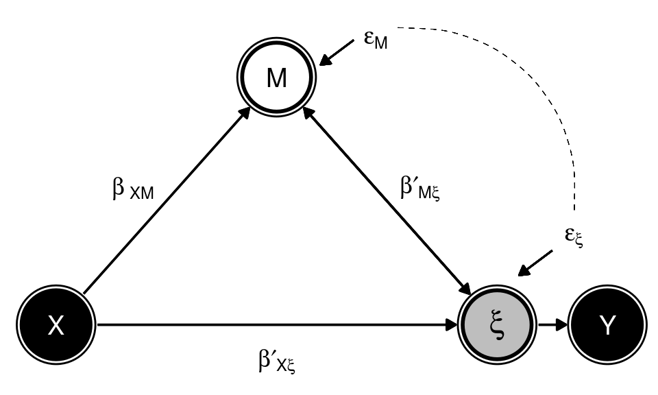
\({\;\;\;\;\;\;}\) La figura (directed acyclic graph) muestra los efectos causales que se pretenden estimar. \(X\) representa la exposición a la intervención educativa, \(M\) es el efecto mediador que supone la decisión de administrar o no el fármaco, \(\xi\) es la percepción de eficacia que los participantes atribuyen a dicho fármaco (variable latente) e \(Y\) es su indicador, la puntuación observada. Los errores \(\varepsilon_M\) y \(\varepsilon^\prime_{\xi}\) se muestan correlacionados ante la posibilidad de que una variable no identificada afecte a \(M\) y \(\xi\) y \(\beta^\prime_{M\xi}\) se corresponde con el efecto de \(M\) en \(\xi\). El efecto de \(\xi\) sobre \(M\) (nótese que el trazo que les une es bidireccional) se debe a que es razonable pensar que la probabilidad de administrar el fármaco está influida por la propia percepción de eficacia que va progresando durante el desarrollo de la prueba.
\({\;\;\;\;\;\;}\) Por otro lado, es importante resaltar la distinción entre \(\xi\) e \(Y\) ya que no existe ninguna teoría ni investigación que permita establecer un isomorfismo entre ambas variables. Tomar dicha asunción equivale a presuponer que la variable latente es cuantitativa y correctamente representada en la escala de intervalo \([0, 100]\) establecida por los investigadores. Por varios motivos, la escala original se ha transformado en otra compuesta de cinco categorías ordinales que pueden ser interpretadas de la siguiente manera: considerable convicción en la ineficacia del fármaco \([0, 20)\); convicción parcial en la ineficacia del fármaco \([20, 40)\); duda \([40, 60)\), convicción parcial en la eficacia del fármaco \([60, 80)\) y considerable convicción en la eficacia del fármaco \([80, 100]\).
\({\;\;\;\;\;\;}\) Cargamos y transformamos los datos:
data <- read.csv("https://osf.io/tzchd/download", sep = ";")
mydata <- data.frame(id = 1:106)
mydata$Indicador[data$Causal_Judgment >= 0] <- 1
mydata$Indicador[data$Causal_Judgment >= 20] <- 2
mydata$Indicador[data$Causal_Judgment >= 40] <- 3
mydata$Indicador[data$Causal_Judgment >= 60] <- 4
mydata$Indicador[data$Causal_Judgment >= 80] <- 5
mydata$Grupo[data$GroupText == "intervention"] <- 1 # Intervención educativa
mydata$Grupo[data$GroupText == "control"] <- 0 # No intervención
mydata$Si <- data$Percentage_Responses * 0.4 # Número de administraciones del fármaco
mydata$No <- 40 - mydata$Si # Número de veces que se decide no administrar el fármaco\({\;\;\;\;\;\;}\) Información del dataset:
str(mydata)
## 'data.frame': 106 obs. of 5 variables:
## $ id : int 1 2 3 4 5 6 7 8 9 10 ...
## $ Indicador: num 4 1 2 1 1 4 1 3 1 1 ...
## $ Grupo : num 1 1 1 1 1 1 1 1 1 1 ...
## $ Si : num 23 9 10 17 18 22 10 22 14 5 ...
## $ No : num 17 31 30 23 22 18 30 18 26 35 ...
# Cantidad de participantes que selecciona cada categoría:
table(mydata$Indicador)
##
## 1 2 3 4 5
## 28 10 28 29 11
# En el grupo de intervención:
table(mydata$Indicador[mydata$Grupo == 1])
##
## 1 2 3 4 5
## 19 4 12 11 1
# En el grupo de no intervención:
table(mydata$Indicador[mydata$Grupo == 0])
##
## 1 2 3 4 5
## 9 6 16 18 10\({\;\;\;\;\;\;}\) La elección de modelar los datos como una función ordinal es más adecuada por las siguientes razones:
\({\;\;\;\;\;\;}\) De esta manera, aunque el análisis original utilizó el método de mínimos cuadrados, aquí se ha decidido aplicar una regresión logística cumulativa parcial2 (Peterson and Harrell 1990) en el que se estima un parámetro \(\beta^\prime_{XY_j}\) diferente para cada punto de corte \(j\):
\[ \log\left(\frac{\text{Pr}(Y \le j)} {\text{Pr}(Y > j)}\right) = \alpha_j - X \beta^\prime_{XY_j} - M \beta^\prime_{MY} \] donde \(Y\) representa las observaciones transformadas.
\({\;\;\;\;\;\;}\) Reemplazando la variable latente por su indicador, la siguiente Figura muestra el modelo empírico con los parámetros que finalmente se estiman.
Causal_Graph_Empirical <- dagify(Y ~ X + M,
M ~ X,
labels = c("X" = "Intervención",
"M" = "Administración\n del fármaco",
"Y" = "Puntuación\n observada"),
exposure = "X",
outcome = "Y",
coords = list(x = c(Y = 3, X = 1, M = 2),
y = c(Y = 1, X = 1, M = 2)))
dag2 <- ggdag(Causal_Graph_Empirical, node_size = 20, text = F) + # use_labels = "label"
geom_dag_node(aes(x = 2, y = 2), internal_colour = "white", color = "white") +
geom_curve(mapping = aes(x = 2.55, xend = 3.35, y = 2.2, yend = 1.45), curvature = -0.5, angle = 90, linetype = "dashed",
size = 0.15) +
annotate("text", x = 2.45, y = 2.15, label = TeX('$\\epsilon_M$'), parse=T, colour = "black", size = 4.5) +
annotate("text", x = 3.35, y = 1.35, label = TeX('$\\epsilon\\prime_{Y}$'), parse=T, colour = "black", size = 4.5) +
annotate("text", x = 1.35, y = 1.55, label = TeX('$\\beta_{\\,XM}$'), parse=T, colour = "black", size = 4.5) +
annotate("text", x = 2.65, y = 1.55, label = TeX('$\\beta\\prime_{MY}$'), parse=T, colour = "black", size = 4.5) +
annotate("text", x = 2, y = 0.85, label = TeX('$\\beta\\prime_{XY_j}$'), parse=T, colour = "black", size = 4.5) +
annotate("text", x = 3, y = 1, label = "Y", parse=F, colour = "white", size = 5) +
annotate("text", x = 1, y = 1, label = "X", parse=F, colour = "white", size = 5) +
annotate("text", x = 2, y = 2, label = "M", parse=F, colour = "black", size = 5) +
scale_y_continuous(limits = c(0.85, 2.2)) + scale_x_continuous(limits = c(0.9, 3.35)) +
theme(axis.line=element_blank(),axis.text.x=element_blank(),
axis.text.y=element_blank(),axis.ticks=element_blank(),
axis.title.x=element_blank(),
axis.title.y=element_blank(),legend.position="none",
panel.background=element_blank(),panel.border=element_blank(),panel.grid.major=element_blank(),
panel.grid.minor=element_blank(),plot.background=element_blank()) +
geom_segment(aes(x = 2.35, xend = 2.2, y = 2.15, yend = 2.05), arrow = arrow(length = unit(2, "mm"), type='closed')) +
geom_segment(aes(x = 3.25, xend = 3.1, y = 1.3, yend = 1.2), arrow = arrow(length = unit(2, "mm"), type='closed')) +
geom_dag_edges_link(arrow = grid::arrow(length = grid::unit(2, "mm"), type = "closed"))
dag2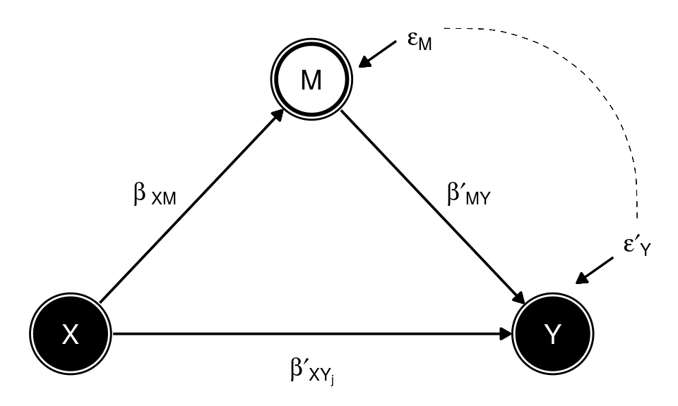
\({\;\;\;\;\;\;}\) Para la regresión de \(M\) en \(X\) (trayectoria con el coeficiente \(\beta_{XM}\)) se adopta un modelo betabinomial que acomoda la sobredispersión observada en \(M\). De esta manera, la probabilidad de la función binomial pasa a considerarse una variable aleatoria que sigue una distribución beta. Este modelo es adecuado porque cabe esperar que las decisiones de administrar el medicamento estén relacionadas en un mismo participante. Es decir, la probabilidad de que un participante decida administrar o no el fármaco depende de sus previas decisiones.
\({\;\;\;\;\;\;}\) Finalmente, para el análisis mediacional se ha empleado la inferencia paramétrica descrita en Imai, Keele, and Tingley (2010) y VanderWeele, Zhang, and Lim (2016), que descansa en la aproximación contrafactual de Judea Pearl (Pearl 2014), quien descompone el efecto total de la intervención en efectos naturales directos (NDE) e indirectos (NIE).
\({\;\;\;\;\;\;}\) Efecto natural directo (NDE): impacto de la intervención educativa en el indicador de la percepción de eficacia si los participantes decidieran admistrar el fármaco como si no hubieran pasado por ella.
\[ NDE = \text{E}[Y_{X_1, M_0} - Y_{X_0, M_0}] \]
\({\;\;\;\;\;\;}\) Efecto natural indirecto (NIE): impacto de la administración del fármaco en el indicador de la percepción de eficacia si los participantes no hubieran pasado por la condición de intervención.
\[ NIE = \text{E}[Y_{X_0, M_1} - Y_{X_0, M_0}] \]
\({\;\;\;\;\;\;}\) Y el efecto total de la intervención educativa (TE) es
\[ TE = \text{E}[Y_{X_1} - Y_{X_0}] = NDE + NIE \]
\({\;\;\;\;\;\;}\) Estos efectos serán estimados siguiendo el método paramétrico descrito en Imai, Keele, and Tingley (2010). Básicamente, consiste en ajustar un modelo que regresa la intervención \(X\) en la variable mediacional \(M\) y otro regresando el indicador \(Y\) en ambas. Luego, con los coeficientes estimados se simulan datos de las condiciones contrafactuales especificadas anteriormente para aproximar las esperanzas matemáticas.
\({\;\;\;\;\;\;}\) Los efectos naturales directo (NDE) e indirecto (NIE) son identificados si (a) \(X\) e \(Y^{xm}\) son independientes dado un set \(C\) de covariables que incluye todas las variables confusoras, (b) \(M^x\) e \(Y^{x^\prime m}\) son independientes dado X y C, (c) \(X\) y \(M^x\) son independientes dado C y (d) \(M^x\) e \(Y^{x^\prime m}\) son independientes dado \(C\) (VanderWeele, Zhang, and Lim 2016).
\[ \text{(a)} \,\,\, Y^{x m} \amalg X \, | \, C \] \[ \text{(b)} \,\,\, Y^{x^\prime m} \amalg M^x \, | \, X, C \] \[ \text{(c)} \,\,\, M^x \amalg X \, | \, C \] \[ \text{(d)} \,\,\, Y^{x^\prime m} \amalg M^x \, | \, C \]
\({\;\;\;\;\;\;}\) Es importante destacar que los superíndices indican situaciones contrafactuales. \(M \amalg X\) no equivale a \(M^x \amalg X\). El primero representa la independencia entre la observación \(M\) y la observación \(X\) mientras que el segundo señala que el valor \(M\) bajo todo posible tratamiento \(x\) hubiera sido independiente a la observación \(X\).
\({\;\;\;\;\;\;}\) Las asunciones (a) y (c) son automáticamente satisfechas por la aleatorización a la intervención. Sin embargo, las asunciones (b) y (d) no son falsables a menos que la variable mediacional sea aleatorizada o se incluya en la regresión todas las variables confusoras. En este experimento \(M\) no fue aleatorizado y en el dataset no hay covariables con las que ajustar el modelo, por lo que estas últimas asunciones permanecerán infalsables.
\({\;\;\;\;\;\;}\) Visualización preliminar de la relación entre el indicador y las covariables:
data_Grupo_1 <- mydata %>% filter(Grupo == 1) # Datos del grupo que recibe la intervención.
data_Grupo_0 <- mydata %>% filter(Grupo == 0) # Datos del grupo que no recibe la intervención.
plot1 <- ggplot(data_Grupo_1) + theme_gray() +
geom_boxplot(aes(x = 3, width = 1.5, ymin = quantile(Si, 0.05), lower = quantile(Si, 0.25), middle = quantile(Si, 0.5),
upper = quantile(Si, 0.75), ymax = quantile(Si, 0.95)), stat = "identity") +
geom_point(aes(x = Indicador, y = Si), alpha = 0.3, size = 2) +
coord_flip() +
labs(title = NULL) +
scale_y_continuous(name = NULL, limits = c(-0.5, 40.5), seq(0, 40, 5)) +
scale_x_continuous(name = NULL, expand = c(0.03, 0), limits = c(0.5, 5.5), seq(1, 5, 1)) +
theme(axis.text.x = element_text(size = 11), axis.title.x = element_text(size = 14),
axis.text.y = element_text(size = 11), axis.title.y = element_text(size = 14)) +
theme(axis.text.x = element_text(margin = unit(c(3, 0, 0, 0), "mm"), colour = "black"),
axis.text.y = element_text(margin = unit(c(0, 3, 0, 0), "mm"), colour = "black")) +
theme(axis.ticks.x = element_line(size = 0.6),
axis.ticks.y = element_line(size = 0.6)) +
theme(axis.title.x = element_text(margin = unit(c(5, 0, 0, 0), "mm"), colour = "black"),
axis.title.y = element_text(margin = unit(c(0, 5, 0, 0), "mm"), colour = "black")) +
theme(plot.margin = unit(c(0.5, 0 , 0.25, 0.5), "cm")) +
theme(panel.border = element_rect(fill = NA), axis.ticks.length = unit(0.2, "cm")) +
annotate("text", x = 4.5, y = 4, label = "Intervención", parse = F, colour = "black", size = 5)
plot2 <- ggplot(data_Grupo_0) + theme_gray() +
geom_boxplot(aes(x = 3, width = 1.5, ymin = quantile(Si, 0.05), lower = quantile(Si, 0.25), middle = quantile(Si, 0.5),
upper = quantile(Si, 0.75), ymax = quantile(Si, 0.95)), stat = "identity") +
geom_point(aes(x = Indicador, y = Si), alpha = 0.3, size = 2) +
coord_flip() +
labs(title = NULL) +
scale_y_continuous(name = NULL, limits = c(-0.5, 40.5), seq(0, 40, 5)) +
scale_x_continuous(name = NULL, expand = c(0.03, 0), limits = c(0.5, 5.5), seq(1, 5, 1)) +
theme(axis.text.x = element_text(size = 11), axis.title.x = element_text(size = 14),
axis.text.y = element_text(size = 11), axis.title.y = element_text(size = 14)) +
theme(axis.text.x = element_text(margin = unit(c(3, 0, 0, 0), "mm"), colour = "black"),
axis.text.y = element_text(margin = unit(c(0, 3, 0, 0), "mm"), colour = "black")) +
theme(axis.ticks.x = element_line(size = 0.6),
axis.ticks.y = element_line(size = 0.6)) +
theme(axis.title.x = element_text(margin = unit(c(5, 0, 0, 0), "mm"), colour = "black"),
axis.title.y = element_text(margin = unit(c(0, 5, 0, 0), "mm"), colour = "black")) +
theme(plot.margin = unit(c(0.25, 0 , 0.5, 0.5), "cm")) +
theme(panel.border = element_rect(fill = NA), axis.ticks.length = unit(0.2, "cm")) +
annotate("text", x = 4.5, y = 4, label = "No intervención", parse = F, colour = "black", size = 5)
grid.arrange(plot1, plot2, bottom = textGrob("Número de administraciones del fármaco", vjust = 0, gp = gpar(fontsize = 14)),
left = textGrob("Indicador de la percepción de eficacia", gp = gpar(fontsize = 14), rot = 90, vjust = 0.1, hjust = 0.4))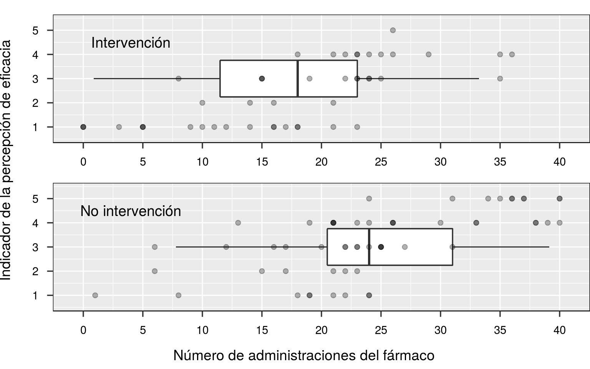
\({\;\;\;\;\;\;}\) Contrastamos la asunción de que el coeficiente de la intervención y el del número de administraciones del fármaco son cumulativamente constantes a lo largo de las categorías (cumulative odds assumption) aplicando una regresión binomial para cada punto de corte:
odds_grupo <- NA; upper.limit_grupo <- NA; lower.limit_grupo <- NA
odds_Si <- NA; upper.limit_Si <- NA; lower.limit_Si <- NA
for(i in 1:4) {
binomial_model <- summary(vglm(I(as.numeric(Indicador) <= i) ~ Grupo + Si, family = binomialff(dispersion = 1), data = mydata))@coef3
# Razones de momios para la intervención:
odds_grupo[i] <- exp(binomial_model["Grupo", "Estimate"])
upper.limit_grupo[i] <- exp(binomial_model["Grupo", "Estimate"] + binomial_model["Grupo", "Std. Error"] * qnorm(0.975))
lower.limit_grupo[i] <- exp(binomial_model["Grupo", "Estimate"] + binomial_model["Grupo", "Std. Error"] * qnorm(1-0.975))
# Razones de momios para el número de administraciones del fármaco:
odds_Si[i] <- exp(binomial_model["Si", "Estimate"])
upper.limit_Si[i] <- exp(binomial_model["Si", "Estimate"] + binomial_model["Si", "Std. Error"] * qnorm(0.975))
lower.limit_Si[i] <- exp(binomial_model["Si", "Estimate"] + binomial_model["Si", "Std. Error"] * qnorm(1-0.975))
}
binomial_coefs_Grupo <- t(rbind(upper.limit_grupo, odds_grupo, lower.limit_grupo))
colnames(binomial_coefs_Grupo) <- c("2.5%", "Estimación", "97.5%")
rownames(binomial_coefs_Grupo) <- paste("Pr(Y) <=", 1:4, sep = " ")
binomial_coefs_Si <- t(rbind(upper.limit_Si, odds_Si, lower.limit_Si))
colnames(binomial_coefs_Si) <- c("2.5%", "Estimación", "97.5%")
rownames(binomial_coefs_Si) <- paste("Pr(Y) <=", 1:4, sep = " ")
kable(binomial_coefs_Grupo, digits = 3, caption = "Coeficientes para la intervención", align = "c") %>%
kable_styling(bootstrap_options = "striped", full_width = F)
kable(1 / binomial_coefs_Si, digits = 3, caption = "Coeficientes para el número de administraciones del fármaco", align = "c") %>%
kable_styling(bootstrap_options = "striped", full_width = F)| 2.5% | Estimación | 97.5% | |
|---|---|---|---|
| Pr(Y) <= 1 | 5.551 | 1.868 | 0.628 |
| Pr(Y) <= 2 | 3.287 | 1.161 | 0.410 |
| Pr(Y) <= 3 | 2.918 | 1.012 | 0.351 |
| Pr(Y) <= 4 | 33.268 | 3.408 | 0.349 |
| 2.5% | Estimación | 97.5% | |
|---|---|---|---|
| Pr(Y) <= 1 | 1.096 | 1.184 | 1.280 |
| Pr(Y) <= 2 | 1.127 | 1.234 | 1.351 |
| Pr(Y) <= 3 | 1.142 | 1.262 | 1.395 |
| Pr(Y) <= 4 | 1.110 | 1.252 | 1.414 |
\({\;\;\;\;\;\;}\) Como podemos observar, las estimaciones de las razones de momios para la intervención son muy diferentes o presentan un error de medida demasiado amplio como para asumir su igualdad. Sin embargo, las razones de momios para el número de administraciones del fármaco son bastante similares y los intervalos de confianza no son excesivamente amplios. Por tanto, un modelo cumulativo parcial en el que emplear un parámetro distinto para la variable intervencional por cada punto de corte es apropiado.
\({\;\;\;\;\;\;}\) En primer lugar, debemos estimar el efecto de la intervención educativa en el número de administraciones del fármaco. Sin embargo, no podemos emplear un simple modelo binomial debido a la presencia de sobredispersión, seguramente debida a que los ensayos bernoulli de cada participante se encuentran correlacionados y dependen, en parte, de la percepción de eficacia del fármaco que el participante va desarrollando durante la ejecución del experimento (como se muestra en el directed acyclic graph):
binomial_model <- glm(cbind(Si, No) ~ Grupo, family = binomial, data = mydata)
# Si no existiera sobredispersión, los grados de libertad residuales del modelo no deberían ser sorprendentemente distintos a la suma de los cuadrados residuales de Pearson:
residuals <- resid(binomial_model, type = "pearson")
sum(residuals^2) / binomial_model$df.residual
# Esta razón indica que la varianza observada es hasta 8.35 veces superior a la esperada por el modelo binomial.## [1] 8.354068# Una opción es reajustar el modelo con un parámetro añadido que acomode esta sobredispersión (modelo quasibinomial):
modelo_quasibinomial <- glm(cbind(Si, No) ~ Grupo, family = quasibinomial, data = mydata)
summary(modelo_quasibinomial)$dispersion
# Este modelo da lugar a las mismas estimaciones pero con intervalos de confianza más amplios.
# Sin embargo, el modelo betabinomial es teóricamente más adecuado porque permite que la probabilidad de los participantes de decidir administrar el fármaco sea una distribución en lugar de un valor fijo.## [1] 8.354068Utilizaremos un modelo betabinomial:
\[ k \, | \, n \sim \text{Binomial}(\theta, \text{n})\] \[ \theta \sim \text{Beta}(\alpha, \beta) \] donde \(k\) se corresponde con el número de administraciones del fármaco.
# Ajustamos el modelo betabinomial:
modelo_XM <- vglm(cbind(Si, No) ~ Grupo, family = betabinomial, data = mydata)
odds.ratios_XM <- exp(cbind(coef(modelo_XM), confint(modelo_XM))) # Los coeficientes en razones de momios.
summary_modelo_XM <- summary(modelo_XM)@coef3 # Tabla de coeficientes en logaritmos.
rho <- summary(modelo_XM)@misc$rho[1] # Estimada correlación entre las decisiones de un mismo participante (intraclass correlation).
odds.ratios_XM## 2.5 % 97.5 %
## (Intercept):1 1.6237295 1.2630867 2.0873448
## (Intercept):2 0.2774607 0.2101624 0.3663093
## Grupo 0.4549559 0.3125152 0.6623194\({\;\;\;\;\;\;}\) En segundo lugar, utilizaremos un modelo logístico cumulativo parcial para regresar el indicador en la intervención y el número de administraciones del fármaco:
\[\text{logit}(Y \le j) = \alpha_j - X\beta^\prime_{XY_j} - M\beta^\prime_{MY}\]
\({\;\;\;\;\;\;}\) Para comprobar si el efecto de la decisión de administrar el fármaco no es lineal, ajustamos el modelo ordinal con un término spline y comprobamos si su grados de libertad difieren de 1:
summary(vgam(Indicador ~ Grupo + sm.os(Si), family = cumulative(parallel = F ~ Grupo), data = mydata))
##
## Call:
## vgam(formula = Indicador ~ Grupo + sm.os(Si), family = cumulative(parallel = F ~
## Grupo), data = mydata)
##
##
## Pearson residuals:
## Min 1Q Median 3Q Max
## logit(P[Y<=1]) -2.5061 -0.262339 -0.13937 0.21770 3.1371
## logit(P[Y<=2]) -2.7846 -0.505096 -0.11688 0.29958 2.6491
## logit(P[Y<=3]) -3.2763 -0.389215 0.15002 0.58013 2.6374
## logit(P[Y<=4]) -5.4007 0.043515 0.11207 0.21813 1.4544
##
## Parametric coefficients:
## Estimate Std. Error z value Pr(>|z|)
## (Intercept):1 -1.87531 0.42770 -4.3846 1.162e-05 ***
## (Intercept):2 -1.04935 0.35366 -2.9671 0.003006 **
## (Intercept):3 0.67445 0.32139 2.0986 0.035854 *
## (Intercept):4 3.02697 0.48783 6.2049 5.472e-10 ***
## Grupo:1 0.50883 0.56506 0.9005 0.367861
## Grupo:2 0.23742 0.50637 0.4689 0.639159
## Grupo:3 0.24412 0.50694 0.4815 0.630127
## Grupo:4 1.24675 1.12416 1.1090 0.267411
## ---
## Signif. codes: 0 '***' 0.001 '**' 0.01 '*' 0.05 '.' 0.1 ' ' 1
##
## Approximate significance of smooth terms:
## edf Est.rank Chi.sq p-value
## sm.os(Si) 0.99511 2 44.256 2.454e-10 ***
## ---
## Signif. codes: 0 '***' 0.001 '**' 0.01 '*' 0.05 '.' 0.1 ' ' 1
##
## Number of linear/additive predictors: 4
##
## Names of linear/additive predictors: logit(P[Y<=1]), logit(P[Y<=2]), logit(P[Y<=3]), logit(P[Y<=4])
##
## Dispersion Parameter for cumulative family: 1
##
## Residual deviance: 245.0071 on 425 degrees of freedom
##
## Log-likelihood: -122.5036 on 425 degrees of freedom
##
## Number of outer iterations: 6
##
## Number of IRLS iterations at final outer iteration: 2\({\;\;\;\;\;\;}\) Los grados de libertad son aproximadamente 1, por lo que utilizaremos un modelo lineal:
modelo_XMY <- vglm(Indicador ~ Grupo + Si, family = cumulative(parallel = F ~ Grupo), data = mydata)
odds.ratios_XMY <- exp(-cbind(coef(modelo_XMY), confint(modelo_XMY)))
summary_modelo_XMY <- summary(modelo_XMY)@coef3
odds.ratios_XMY## 2.5 % 97.5 %
## (Intercept):1 0.1015826325 0.412609003 0.0250092246
## (Intercept):2 0.0444277624 0.179293542 0.0110089078
## (Intercept):3 0.0078981658 0.036210022 0.0017227557
## (Intercept):4 0.0007460076 0.005143112 0.0001082083
## Grupo:1 0.6034088452 1.828980557 0.1990738682
## Grupo:2 0.7914697709 2.137970906 0.2929994961
## Grupo:3 0.7857085018 2.124413631 0.2905921148
## Grupo:4 0.2887330438 2.613733816 0.0318956621
## Si 1.2151276684 1.286966998 1.1472984563\({\;\;\;\;\;\;}\) También ajustaremos otro modelo parcial logístico cumulativo regresando el indicador solamente en la intervención, aunque no es necesario para obtener los efectos naturales:
modelo_XY <- vglm(Indicador ~ Grupo, family = cumulative(parallel = F ~ Grupo, reverse = T), data = mydata)
odds.ratios_XY <- exp(cbind(coef(modelo_XY), confint(modelo_XY)))
summary_modelo_XY <- summary(modelo_XY)@coef3
odds.ratios_XY## 2.5 % 97.5 %
## (Intercept):1 5.5555556 2.73220728 11.2964334
## (Intercept):2 2.9333333 1.63253389 5.2706069
## (Intercept):3 0.9032258 0.54184524 1.5056271
## (Intercept):4 0.2040816 0.10338035 0.4028745
## Grupo:1 0.2652632 0.10590612 0.6644049
## Grupo:2 0.3557312 0.15685858 0.8067439
## Grupo:3 0.3795918 0.16531259 0.8716212
## Grupo:4 0.1065217 0.01311733 0.8650296\({\;\;\;\;\;\;}\) A continuación se exponen brevemente las principales ideas subyacentes a cada método estadístico y se discuten los resultados obtenidos en acordancia.
Without hoping to know whether each separate hypothesis is true or false, we may search for rules to govern our behaviour with regard to them, in following which we insure that, in the long run of experience, we shall not be too often wrong. - Neyman and Pearson (1933)
\({\;\;\;\;\;\;}\) Este paradigma, que considera el investigador está interesado en seleccionar líneas de investigación que maximizan la calidad pragmática de su producción científica, ha sido recientemente reificado en forma de tests de equivalencia, superioridad e inferioridad (Lakens 2017). Su característica principal consiste en la justificación del mínimo valor del parámetro por el que el investigador está interesado o dispuesto a invertir sus recursos y posteriormente verificar si un efecto, al menos tan importante como este, es experimentalmente detectado.3 En caso de optar por un test de equivalencia debemos establecer para \(\beta_{XY_j}\), por ejemplo, los mínimos efectos de interés \(\beta_{XY_j}\,_{min-}\) y \(\beta_{XY_j}\,_{min+}\)4 y luego diseñar un experimento que goce de la potencia estadística suficiente para detectar con alta probabilidad una desviación de ambos límites. Una vez desarrollado el experimento y computado el intervalo de confianza del parámetro, si observamos que ambos límites descansan en el intervalo de equivalencia definido por \(\beta_{XY_j}\,_{min-}\) y \(\beta_{XY_j}\,_{min+}\), declaramos que \(\beta_{XY_j}\) es equivalente a la hipótesis nula, o lo que es lo mismo, que su valor es demasiado pequeño para merecer el interés del investigador. Así, el científico adopta un enfoque conductual en el que su actividad investigadora se centra en detectar fenómenos que considera de práctica importancia, según sus recursos, mientras no erra más allá de un porcentaje de veces determinado por el error tipo I (\(\alpha\)).
\({\;\;\;\;\;\;}\) En el contexto de la intervención educativa que nos concierne, tan solo es necesario emplear tests de superioridad e inferioridad, estableciendo únicamente un mínimo efecto de interés para cada parámetro (\(\beta^\prime_{XY_j}\,_{min-}\), \(\beta_{XM}\,_{min-}\) y \(\beta^\prime_{MY}\,_{min+}\)), ya que no existe razón teórica alguna por la que pensar que la intervención educativa incremente las ilusiones causales o que exponerse a más administraciones del fármaco las disminuye. En los casos de \(\beta^\prime_{XY_j}\) y \(\beta_{XM}\) debemos observar si los límites inferiores de sus intervalos de confianza son mayores a \(\beta^\prime_{XY_j}\,_{min-}\) y \(\beta_{XM}\,_{min-}\), respectivamente, para declarar superioridad e interpretar que la importancia práctica de los parámetros no compensa los recursos ni el interés que el investigador está dispuesto a invertir para estudiarlo. Respecto a \(\beta^\prime_{MY}\), debemos contrastar si el límite superior de su intervalo de confianza es menor a \(\beta^\prime_{MY}\,_{min+}\) para declarar inferioridad y llegar a la misma conclusión.
\({\;\;\;\;\;\;}\) La siguiente figura muestra las estimaciones de los parámetros en razón de momios (odds ratios) y sus intervalos de confianza al 95%. Si consideramos que \(\beta^\prime_{XY_j}\,_{min-} = \beta_{XM}\,_{min-} = 0.83\), es decir, que nuestro mínimo efecto de interés para los parámetros \(\beta^\prime_{XY_j}\) y \(\beta_{XM}\) es 0.83,5 hemos de rechazar que \(\beta_{XM}\) sea superior al límite establecido ya que el límite superior de su intervalo de confianza es menor a tal magnitud. Por el contrario, no podemos tomar una decisión respecto a ninguna \(\beta^\prime_{XY_j}\) debido a que sus intervalos de confianza no están ni exclusivamente contenidos en la región de superioridad ni bajo ella. Por tanto, los resultados de \(\beta^\prime_{XY_j}\) se consideran inconclusos. Por último, si para el coeficiente \(\beta^\prime_{MY}\) se ha establecido que \(\beta^\prime_{MY}\,_{min+} = 1.05\), es decir, que por cada decisión de no administrar el fármaco el mínimo efecto de interés equivale a un aumento del 5% en los momios del grupo de intervención de puntuar en una categoría inferior en comparación al de no intervención, nos encontramos en disposición de recharar la existencia de inferioridad.
my.df <- data.frame(x = c(0,1))
p <- ggplot(my.df, aes(x = x))
plot5 <- p + theme_gray() +
scale_x_continuous(name = "", seq(0, 1, 0.2)) +
coord_cartesian(xlim = c(0, 1)) +
scale_y_continuous(name = NULL, limits = c(0.5, 4.5), expand = c(0.03, 0), seq(1, 4, 1),
labels = c(TeX('$\\beta_{\\,XY_1}$'),
TeX('$\\beta_{\\,XY_2}$'), TeX('$\\beta_{\\,XY_3}$'),
TeX('$\\beta_{\\,XY_4}$'))) +
theme(axis.text.x = element_text(size = 13), axis.title.x = element_text(size = 13),
axis.text.y = element_text(size = 15, colour = "black")) +
theme(axis.title.x = element_text(margin = unit(c(5, 0, 0, 0), "mm"), colour="black")) +
theme(axis.text.x = element_text(margin = unit(c(2, 0, 0, 0), "mm"), colour = "black")) +
theme(axis.text.y = element_text(margin = unit(c(0, 2, 0, 0), "mm"), colour = "black")) +
theme(axis.ticks.x = element_line(size = 0.4),
axis.ticks.y = element_line(size = 0.4)) +
theme(panel.border = element_rect(fill = NA), axis.ticks.length = unit(0.2, "cm"),
axis.line = element_line(size = 0.5, colour = "black")) +
theme(axis.ticks.length = unit(.15, "cm")) +
geom_segment(aes(x = odds.ratios_XY[5, 2], y = 1, xend = odds.ratios_XY[5, 3], yend = 1), linetype = "solid", colour = "black", lty = 2) +
geom_segment(aes(x = odds.ratios_XY[6, 2], y = 2, xend = odds.ratios_XY[6, 3], yend = 2), linetype = "solid", colour = "black", lty = 2) +
geom_segment(aes(x = odds.ratios_XY[7, 2], y = 3, xend = odds.ratios_XY[7, 3], yend = 3), linetype = "solid", colour = "black", lty = 2) +
geom_segment(aes(x = odds.ratios_XY[8, 2], y = 4, xend = odds.ratios_XY[8, 3], yend = 4), linetype = "solid", colour = "black", lty = 2) +
geom_segment(aes(x = 1/1.2, y = 0.5, xend = 1/1.2, yend = 4.5), colour = "black", linetype = "dashed", size = 0.3) +
geom_point(aes(x = odds.ratios_XY[5, 1], y = 1), shape = 21, colour = "black", fill = "white", size = 4) +
geom_point(aes(x = odds.ratios_XY[6, 1], y = 2), shape = 21, colour = "black", fill = "white", size = 4) +
geom_point(aes(x = odds.ratios_XY[7, 1], y = 3), shape = 21, colour = "black", fill = "white", size = 4) +
geom_point(aes(x = odds.ratios_XY[8, 1], y = 4), shape = 21, colour = "black", fill = "white", size = 4)
plot6 <- p + theme_gray() +
scale_x_continuous(name = "", seq(0, 2.5, 0.5)) +
coord_cartesian(xlim = c(0, 2.7)) +
scale_y_continuous(name = NULL, limits = c(-0.5, 5.5), expand = c(0.03, 0), seq(0, 5, 1),
labels = c(TeX('$\\beta\\prime_{MY}$'), TeX('$\\beta_{\\,XM}$'), TeX('$\\beta\\prime_{XY_1}$'),
TeX('$\\beta\\prime_{XY_2}$'), TeX('$\\beta\\prime_{XY_3}$'),
TeX('$\\beta\\prime_{XY_4}$'))) +
theme(axis.text.x = element_text(size = 13), axis.title.x = element_text(size = 13),
axis.text.y = element_text(size = 15, colour = "black")) +
theme(axis.title.x = element_text(margin = unit(c(5, 0, 0, 0), "mm"), colour="black")) +
theme(axis.text.x = element_text(margin = unit(c(2, 0, 0, 0), "mm"), colour = "black")) +
theme(axis.text.y = element_text(margin = unit(c(0, 2, 0, 0), "mm"), colour = "black")) +
theme(axis.ticks.x = element_line(size = 0.4),
axis.ticks.y = element_line(size = 0.4)) +
theme(panel.border = element_rect(fill = NA), axis.ticks.length = unit(0.2, "cm"),
axis.line = element_line(size = 0.5, colour = "black")) +
theme(axis.ticks.length = unit(.15, "cm")) +
geom_segment(aes(x = odds.ratios_XMY[5, 2], y = 5, xend = odds.ratios_XMY[5, 3], yend = 5), linetype = "solid", colour = "black", lty = 2) +
geom_segment(aes(x = odds.ratios_XMY[6, 2], y = 4, xend = odds.ratios_XMY[6, 3], yend = 4), linetype = "solid", colour = "black", lty = 2) +
geom_segment(aes(x = odds.ratios_XMY[7, 2], y = 3, xend = odds.ratios_XMY[7, 3], yend = 3), linetype = "solid", colour = "black", lty = 2) +
geom_segment(aes(x = odds.ratios_XMY[8, 2], y = 2, xend = odds.ratios_XMY[8, 3], yend = 2), linetype = "solid", colour = "black", lty = 2) +
geom_segment(aes(x = odds.ratios_XMY[9, 2], y = 0, xend = odds.ratios_XMY[9, 3], yend = 0), linetype = "solid", colour = "black", lty = 2) +
geom_segment(aes(x = odds.ratios_XM[3, 2], y = 1, xend = odds.ratios_XM[3, 3], yend = 1), linetype = "solid", colour = "black", lty = 2) +
geom_segment(aes(x = 1.05, y = -0.5, xend = 1.05, yend = 0.5), colour = "black", linetype = "dashed", size = 0.3) +
geom_segment(aes(x = 1/1.20, y = 0.5, xend = 1/1.20, yend = 5.5), colour = "black", linetype = "dashed", size = 0.3) +
geom_point(aes(x = odds.ratios_XMY[5, 1], y = 5), shape = 21, colour = "black", fill = "white", size = 4) +
geom_point(aes(x = odds.ratios_XMY[6, 1], y = 4), shape = 21, colour = "black", fill = "white", size = 4) +
geom_point(aes(x = odds.ratios_XMY[7, 1], y = 3), shape = 21, colour = "black", fill = "white", size = 4) +
geom_point(aes(x = odds.ratios_XMY[8, 1], y = 2), shape = 21, colour = "black", fill = "white", size = 4) +
geom_point(aes(x = odds.ratios_XMY[9, 1], y = 0), shape = 21, colour = "black", fill = "white", size = 2) +
geom_point(aes(x = odds.ratios_XM[3, 1], y = 1), shape = 21, colour = "black", fill = "white", size = 4)
grid.arrange(plot5, plot6, nrow = 1, bottom = textGrob("Razón de momios", vjust = -0.6, gp = gpar(fontsize = 14)))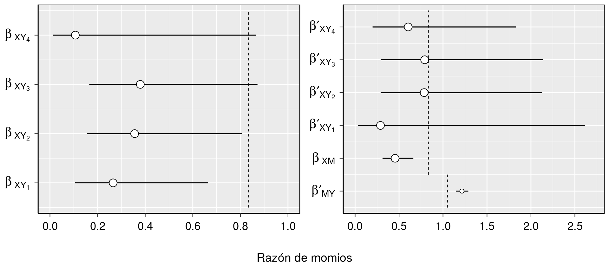
\({\;\;\;\;\;\;}\) En general, los resultados sugerieren que existe un efecto total sobre la percepción de eficacia del fármaco atribuible a la intervención educativa \(X\) y que es transmitido a \(Y\) por medio de \(M\), tal y como hipotetizaron Barberia (2018). Sin embargo, interpretar razones de momios puede resultar una tarea compleja. Las siguientes tablas muestran los efectos naturales directos, indirectos y totales, así como sus intervalos de confianza del 95%.
# Función para obtener las probabilidades predichas por nuestro modelo logístico cumulativo:
predictPO <- function(Si, Grupo, Intercepto_1, Intercepto_2, Intercepto_3, Intercepto_4,
beta_X1, beta_X2, beta_X3, beta_X4, beta_M) {
prob1 <- 1 / (1 + exp(-Intercepto_1 + beta_X1* Grupo + beta_M * Si)) # Probabilidad de puntuar en la categoría 1, etc.
prob2 <- 1 / (1 + exp(-Intercepto_2 + beta_X2 * Grupo + beta_M * Si)) - prob1
prob3 <- 1 / (1 + exp(-Intercepto_3 + beta_X3 * Grupo + beta_M * Si)) - prob2 - prob1
prob4 <- 1 / (1 + exp(-Intercepto_4 + beta_X4 * Grupo + beta_M * Si)) - prob3 - prob2 - prob1
prob5 <- 1 - prob4 - prob3 - prob2 - prob1
return(cbind(prob1, prob2, prob3, prob4, prob5))
}
# La idea para hallar los efectos contrafactuales es introducir en esta función los coeficientes estimados de ambos modelos.
simulaciones <- 1e4 # Número de simulaciones
# Los resultados reportados en el manuscrito se realizaron con un millón de muestras pero es una exageración. Con tan solo 10000 se consigue una buena estimación.
n <- nrow(mydata) # Número de observaciones del dataset.
# Creamos las matrices donde guardar los resultados:
NDE_matrix <- matrix(NA, nrow = simulaciones, ncol = 5)
NIE_matrix <- matrix(NA, nrow = simulaciones, ncol = 5)
set.seed(1)
for (i in 1:simulaciones) {
# Modelo betabinomial:
# Simulamos intercepto:
Intercept <- rnorm(1, summary_modelo_XM[1, "Estimate"], summary_modelo_XM[1, "Std. Error"])
# Simulamos el efecto dela intervención educativa:
Coefficient <- rnorm(1, summary_modelo_XM["Grupo", "Estimate"], summary_modelo_XM["Grupo", "Std. Error"])
# Probabilidad simulada de que un participante del grupo de intervención decida administrar el fármaco:
prob1 <- exp(Intercept + 1 * Coefficient) / (1 + exp(Intercept + 1 * Coefficient))
# Probabilidad simulada de que un participante del grupo de no intervención decida administrar el fármaco:
prob0 <- exp(Intercept) / (1 + exp(Intercept))
# Simulamos datos:
M1 <- rbetabinom(n, size = 40, prob1, rho = rho) # Número de administraciones del fármaco si los particpantes se expusieran a la intervención educativa.
M0 <- rbetabinom(n, size = 40, prob0, rho = rho) # Número de administraciones del fármaco si los particpantes no se expusieran a la intervención educativa.
# Modelo cumulativo logístico parcial:
# Simulamos interceptos:
Intercepto_1 <- rnorm(1, summary_modelo_XMY[1, "Estimate"], summary_modelo_XMY[1, "Std. Error"])
Intercepto_2 <- rnorm(1, summary_modelo_XMY[2, "Estimate"], summary_modelo_XMY[2, "Std. Error"])
Intercepto_3 <- rnorm(1, summary_modelo_XMY[3, "Estimate"], summary_modelo_XMY[3, "Std. Error"])
Intercepto_4 <- rnorm(1, summary_modelo_XMY[4, "Estimate"], summary_modelo_XMY[4, "Std. Error"])
# Simulamos los efectos de la intervención educativa y el número de administraciones del fármaco en el indicador de la percepción de eficacia:
beta_X1<- rnorm(1, -summary_modelo_XMY[5, "Estimate"], summary_modelo_XMY[5, "Std. Error"])
beta_X2 <- rnorm(1, -summary_modelo_XMY[6, "Estimate"], summary_modelo_XMY[6, "Std. Error"])
beta_X3 <- rnorm(1, -summary_modelo_XMY[7, "Estimate"], summary_modelo_XMY[7, "Std. Error"])
beta_X4 <- rnorm(1, -summary_modelo_XMY[8, "Estimate"], summary_modelo_XMY[8, "Std. Error"])
beta_M <- rnorm(1, -summary_modelo_XMY[9, "Estimate"], summary_modelo_XMY[9, "Std. Error"])
# Por último, predecimos las probabilidades de cada participante para puntuar en cada categoría:
Y1M0 <- predictPO(Si = M0, Grupo = 1,
Intercepto_1 = Intercepto_1, Intercepto_2 = Intercepto_2, Intercepto_3 = Intercepto_3,
Intercepto_4 = Intercepto_4, beta_X1= beta_X1, beta_X2 = beta_X2,
beta_X3 = beta_X3, beta_X4 = beta_X4, beta_M = beta_M)
Y1M1 <- predictPO(Si = M1, Grupo = 1,
Intercepto_1 = Intercepto_1, Intercepto_2 = Intercepto_2, Intercepto_3 = Intercepto_3,
Intercepto_4 = Intercepto_4, beta_X1= beta_X1, beta_X2 = beta_X2,
beta_X3 = beta_X3, beta_X4 = beta_X4, beta_M = beta_M)
Y0M0 <- predictPO(Si = M0, Grupo = 0,
Intercepto_1 = Intercepto_1, Intercepto_2 = Intercepto_2, Intercepto_3 = Intercepto_3,
Intercepto_4 = Intercepto_4, beta_X1= beta_X1, beta_X2 = beta_X2,
beta_X3 = beta_X3, beta_X4 = beta_X4, beta_M = beta_M)
Y0M1 <- predictPO(Si = M1, Grupo = 0,
Intercepto_1 = Intercepto_1, Intercepto_2 = Intercepto_2, Intercepto_3 = Intercepto_3,
Intercepto_4 = Intercepto_4, beta_X1= beta_X1, beta_X2 = beta_X2,
beta_X3 = beta_X3, beta_X4 = beta_X4, beta_M = beta_M)
# Estimamos los efectos:
NDE <- Y1M0 - Y0M0 # Efecto natural directo
NIE <- Y0M1 - Y0M0 # Efecto natural indirecto
NDE_matrix[i, ] <- apply(NDE, MARGIN = 2, mean) # NDE promediado para cada categoría.
NIE_matrix[i, ] <- apply(NIE, MARGIN = 2, mean) # NIE promediado para cada categoría.
# Repetimos esta simulación muchas veces.
}
NDE_estimate <- apply(NDE_matrix, MARGIN = 2, mean) # Media de los NDE promediados para cada categoría.
NIE_estimate <- apply(NIE_matrix, MARGIN = 2, mean) # Media de los NIE promediados para cada categoría.
TE_estimate <- NDE_estimate + NIE_estimate # Efecto total
# Hallamos los intervalos de confianza del 95% buscando los cuantiles 0.025 y 0.975 de la distribución de los efectos:
confint_NDE_estimate <- apply(NDE_matrix, MARGIN = 2, function(x) quantile(x, probs = c(0.025, 0.975)))
confint_NIE_estimate <- apply(NIE_matrix, MARGIN = 2, function(x) quantile(x, probs = c(0.025, 0.975)))
confint_TE_estimate <- apply(NDE_matrix + NIE_matrix, MARGIN = 2, function(x) quantile(x, probs = c(0.025, 0.975)))
NDEs <- cbind(confint_NDE_estimate[1, ], NDE_estimate, confint_NDE_estimate[2, ])
NIEs <- cbind(confint_NIE_estimate[1, ], NIE_estimate, confint_NIE_estimate[2, ])
TEs <- cbind(confint_TE_estimate[1, ], TE_estimate, confint_TE_estimate[2, ])
rownames(NDEs) <- rownames(NIEs) <- rownames(TEs) <- paste("Categoría", seq(1:5), sep = " ")
colnames(NDEs) <- colnames(NIEs) <- colnames(TEs) <- c("2.5%", "Estimación", "97.5%")
kable(NDEs, digits = 3, caption = "Efecto Natural Directo", align = "c") %>%
kable_styling(bootstrap_options = "striped", full_width = F)
kable(NIEs, digits = 3, caption = "Efecto Natural Indirecto", align = "c") %>%
kable_styling(bootstrap_options = "striped", full_width = F)
kable(TEs, digits = 3, caption = "Efecto Total", align = "c") %>%
kable_styling(bootstrap_options = "striped", full_width = F)| 2.5% | Estimación | 97.5% | |
|---|---|---|---|
| Categoría 1 | -0.051 | 0.056 | 0.211 |
| Categoría 2 | -0.217 | -0.025 | 0.151 |
| Categoría 3 | -0.191 | 0.003 | 0.188 |
| Categoría 4 | -0.183 | 0.049 | 0.305 |
| Categoría 5 | -0.299 | -0.084 | 0.115 |
| 2.5% | Estimación | 97.5% | |
|---|---|---|---|
| Categoría 1 | 0.056 | 0.184 | 0.330 |
| Categoría 2 | -0.049 | 0.029 | 0.129 |
| Categoría 3 | -0.125 | -0.003 | 0.100 |
| Categoría 4 | -0.246 | -0.099 | 0.015 |
| Categoría 5 | -0.289 | -0.112 | -0.009 |
| 2.5% | Estimación | 97.5% | |
|---|---|---|---|
| Categoría 1 | 0.065 | 0.240 | 0.456 |
| Categoría 2 | -0.214 | 0.005 | 0.207 |
| Categoría 3 | -0.238 | 0.000 | 0.210 |
| Categoría 4 | -0.334 | -0.050 | 0.278 |
| Categoría 5 | -0.540 | -0.196 | 0.014 |
\({\;\;\;\;\;\;}\) El \(NDE\) en la categoría 1 es interpretado de la siguiente manera: se estima que, si los participantes del experimento hubieran sido expuestos a la intervención pero se eliminara su efecto sobre la decisión de administrar el fármaco, existiría un 5.6% más de probabilidades de puntuar en esa categoría respecto a no pasar por la intervención. El intervalo de confianza \((-5.1\%, \, 21.1\%)\) contiene el verdadero valor con un 95% de probabilidad. Por otro lado, para la misma categoría, el \(NIE\) es interpretado de la siguiente manera: si ningún participante fuera expuesto a la intervención pero decidieran administrar el fármaco como si hubieran pasado por ella, habría un incremento del 18.4% en las probabilidades de puntuar en esa categoría respecto a la situación en la que administrasen el fármaco como si no hubieran pasado por la intervención.
\({\;\;\;\;\;\;}\) Aquí podríamos haber establecido el mínimo efecto de interés, en lugar de en los parámetros, ya que estos resultados son más intuitivos que las razones de momios.
\({\;\;\;\;\;\;}\) Esta perspectiva engloba una filosofía madura que reúne los mejores aspectos de las concepciones de Fisher y Neyman6 (Mayo and Spanos 2006, Mayo and Spanos (2011)). A diferencia de la visión conductual anterior, se considera que calibrar el porcentage de veces que uno realiza inferencias incorrectas no es suficiente. También es necesario poner de relieve el rigor (severity) con el que se sostienen hipotéticas inferencias sobre el valor del parámetro. Esta idea se ilustra en un principio fundamental:
Principio de rigor: Si una hipótesis pasa un test que posee una alta probabilidad de detectar una incompatibilidad con ella, entonces existe evidencia a favor de dicha hipótesis. Por el contrario, si los datos obtenidos concuerdan con la hipótesis pero, aún siendo verdadera, el test es incapaz de detectar una incompatibilidad con alta probabilidad, entonces no existe suficiente evidencia a favor de la misma.
\({\;\;\;\;\;\;}\) En un contexto estadístico podríamos traducirlo de la siguiente manera: la estimación de un parámetro representa buena evidencia a favor de una hipótesis si, en primer lugar, es compatible con ella y, en segundo lugar, de ser falsa el test habría revelado con alta probabilidad un valor menos compatible. Los p-valores e intervalos de confianza pueden aportar información del rigor de una inferencia particular. Si un test es diseñado para poseer una considerable potencia estadística para detectar \(\theta_0\), se observa un resultado positivo y el límite inferior del intervalo de confianza lo excluye, esta incompatibilidad puede considerarse como buena evidencia de que el valor del parámetro es superior a \(\theta_0\) porque, de lo contrario, se habría observado una menor estimación con alta probabilidad. Es decir, \(\theta > \theta_0\) es una inferencia que pasa el test con suficiente rigor.
\({\;\;\;\;\;\;}\) Sin embargo, la información procedente de un p-valor o un intervalo de confianza es limitada porque no aporta el grado de rigor con el que todos los posibles valores del parámetro han pasado o no el test. El p-valor solo comunica la discrepancia del estadístico respecto a la hipótesis nula mientras que los valores contenidos en los intervalo de confianza meramente son aquellos ante los que no se habría rechazado la hipótesis nula si esta se correspondiera con el valor del parámetro observado.7 Sin embargo, una medida más informativa del rigor aplicable a cada posible valor que puede tomar el parámetro puede computarse a posteriori (tras obtener los datos). Se trata de la probabilidad de haber observado una diferencia mayor o menor que la obtenida considerando cada uno de los posibles valores que puede tomar el parámetro. Esto es equivalente a realizar un análisis de potencia estadística tomando el estadístico observado, y no el valor de la hipótesis nula, como punto de referencia.
\({\;\;\;\;\;\;}\) En la sección anterior habíamos visto que las \(\beta_{XY_j}\), \(\beta_{XM}\) y \(\beta^\prime_{MY}\) son significativas ya que los límites de los intervalos de confianza excluyen el 1 aportando evidencia de una discrepancia de la hipótesis nula. En esta situación, en lugar de limitarse a establecer o no la superioridad, inferioridad o inconclusibilidad de las estimaciones respecto a un mínimo efecto de interés, conviene establecer la máxima o mínima discrepancia que estamos en situación de inferir con rigor. Para ello, dado que los parámetros de la regresión betabinomial y ordinal logística siguen una distribución gausiana, debemos computar la probabilidad cumulativa
\[\frac{1}{\hat{\sigma}_{\beta} \sqrt {2\pi } } ~~ \int_{\infty}^{\beta} \text{exp}{~ - \frac{ ( {\hat{\beta} - \beta } )^2 }{2\hat{\sigma}_{\beta}^2} } \, d\beta\]
para cada posible valor que pueda tomar \(\beta\).8
\({\;\;\;\;\;\;}\) Por el contrario, una vez incluimos el mediador en la regresión, las \(\beta^\prime_{XY_j}\) dejan de ser significativamente distintas de 1. En este otro caso, empleamos la función cumulativa complementaria ya que conviene establecer la máxima discrepancia que podemos descartar con rigor:
\[\frac{1}{\hat{\sigma}_{\beta^\prime_{XY_j}} \sqrt {2\pi } } ~~ \int_{\beta^\prime_{XY_j}}^{\infty} \text{exp}{~ - \frac{ \left( {\hat{\beta^\prime}_{XY_j} - \beta^\prime_{XY_j} } \right)^2 }{2\hat{\sigma}_{\beta^\prime_{XY_j}}^2} } \, d\beta^\prime_{XY_j}\]
\({\;\;\;\;\;\;}\) Volviendo al experimento que nos concierne y siguiendo el método mencionado, la siguiente figura muestra el rigor con el que distintas inferencias sobre los parámetros, estimados en razón de momios, pasan o no el test.
my.df <- data.frame(x = c(0,1))
p <- ggplot(my.df, aes(x=x))
plot7 <- p + theme_gray() +
theme(plot.margin = margin(0.5, 1, 0.2, 0.5, 'cm')) +
scale_x_continuous(name = "Razón de momios", limits = c(0, 1), seq(0, 1, 0.1)) +
scale_y_continuous(name = "Rigor", expand = c(0.03, 0), seq(0, 1, 0.1)) +
theme(axis.text.x = element_text(size = 12), axis.title.x = element_text(size = 14),
axis.text.y = element_text(size = 12), axis.title.y = element_text(size = 14)) +
theme(axis.text.x = element_text(margin = unit(c(3, 0, 0, 0), "mm"), colour = "black"),
axis.text.y = element_text(margin = unit(c(0, 3, 0, 0), "mm"), colour = "black")) +
theme(axis.title.x = element_text(margin = unit(c(5, 0, 0, 0), "mm"), colour = "black"),
axis.title.y = element_text(margin = unit(c(0, 5, 0, 0), "mm"), colour = "black")) +
theme(axis.ticks.x = element_line(size = 0.6),
axis.ticks.y = element_line(size = 0.6)) +
theme(panel.border = element_rect(fill = NA), axis.ticks.length = unit(0.2, "cm")) +
theme(legend.position = c(0.85, 0.25)) +
stat_function(fun = function(x, i, sd) 1 - pnorm(i, log(x), sd), n = 1e3,
args = list(i = summary_modelo_XY["Grupo:1", "Estimate"], sd = summary_modelo_XY["Grupo:1", "Std. Error"]),
lwd = 2, colour = "#848484") +
stat_function(fun = function(x, i, sd) 1 - pnorm(i, log(x), sd), n = 1e3,
args = list(i = summary_modelo_XY["Grupo:2", "Estimate"], sd = summary_modelo_XY["Grupo:2", "Std. Error"]),
lwd = 2, colour = "#6582F3") +
stat_function(fun = function(x, i, sd) 1 - pnorm(i, log(x), sd), n = 1e3,
args = list(i = summary_modelo_XY["Grupo:3", "Estimate"], sd = summary_modelo_XY["Grupo:3", "Std. Error"]),
lwd = 2, colour = "#ECAC09") +
stat_function(fun = function(x, i, sd) 1 - pnorm(i, log(x), sd), n = 1e3,
args = list(i = summary_modelo_XY["Grupo:4", "Estimate"], sd = summary_modelo_XY["Grupo:4", "Std. Error"]),
lwd = 2, colour = "#E13B32") +
stat_function(fun = function(x, i, sd) 1 - pnorm(i, log(x), sd), n = 1e3,
args = list(i = summary_modelo_XM["Grupo", "Estimate"], sd = summary_modelo_XM["Grupo", "Std. Error"]),
lwd = 2, colour = "black") +
annotate("text", x = 0.75, y = 0.6, label = TeX('$\\beta_{\\,XY_1}$'), colour="black", size = 5) +
annotate("text", x = 0.75, y = 0.52, label = TeX('$\\beta_{\\,XY_2}$'), colour="black", size = 5) +
annotate("text", x = 0.75, y = 0.44, label = TeX('$\\beta_{\\,XY_3}$'), parse=T, colour = "black", size = 5) +
annotate("text", x = 0.75, y = 0.36, label = TeX('$\\beta_{\\,XY_4}$'), parse=T, colour = "black", size = 5) +
annotate("text", x = 0.75, y = 0.28, label = TeX('$\\beta_{\\,XM}$'), parse=T, colour = "black", size = 5) +
geom_rect(xmin = 0.85, xmax = 0.91, ymin = 0.63, ymax = 0.57, fill = "#848484") +
geom_rect(xmin = 0.85, xmax = 0.91, ymin = 0.55, ymax = 0.49, fill = "#6582F3") +
geom_rect(xmin = 0.85, xmax = 0.91, ymin = 0.47, ymax = 0.41, fill = "#ECAC09") +
geom_rect(xmin = 0.85, xmax = 0.91, ymin = 0.39, ymax = 0.33, fill = "#E13B32") +
geom_rect(xmin = 0.85, xmax = 0.91, ymin = 0.31, ymax = 0.25, fill = "black")
plot8 <- p + theme_gray() +
theme(plot.margin = margin(0.5, 1, 0.2, 0.5, 'cm')) +
scale_x_continuous(name = "Razón de momios", limits = c(0, 2), seq(0, 2, 0.2)) +
scale_y_continuous(name = "Rigor", expand = c(0.03, 0), seq(0, 1, 0.1)) +
theme(axis.text.x = element_text(size = 12), axis.title.x = element_text(size = 14),
axis.text.y = element_text(size = 12), axis.title.y = element_text(size = 14)) +
theme(axis.text.x = element_text(margin = unit(c(3, 0, 0, 0), "mm"), colour = "black"),
axis.text.y = element_text(margin = unit(c(0, 3, 0, 0), "mm"), colour = "black")) +
theme(axis.title.x = element_text(margin = unit(c(5, 0, 0, 0), "mm"), colour = "black"),
axis.title.y = element_text(margin = unit(c(0, 5, 0, 0), "mm"), colour = "black")) +
theme(axis.ticks.x = element_line(size = 0.6),
axis.ticks.y = element_line(size = 0.6)) +
theme(panel.border = element_rect(fill = NA), axis.ticks.length = unit(0.2, "cm")) +
theme(legend.position = c(0.85, 0.25)) +
stat_function(fun = function(x, i, sd) pnorm(i, log(x), sd), n = 1e3,
args = list(i = -summary_modelo_XMY["Grupo:1", "Estimate"], sd = summary_modelo_XMY["Grupo:1", "Std. Error"]),
lwd = 2, colour = "#848484") +
stat_function(fun = function(x, i, sd) pnorm(i, log(x), sd), n = 1e3,
args = list(i = -summary_modelo_XMY["Grupo:2", "Estimate"], sd = summary_modelo_XMY["Grupo:2", "Std. Error"]),
lwd = 2, colour = "#6582F3") +
stat_function(fun = function(x, i, sd) pnorm(i, log(x), sd), n = 1e3,
args = list(i = -summary_modelo_XMY["Grupo:3", "Estimate"], sd = summary_modelo_XMY["Grupo:3", "Std. Error"]),
lwd = 2, colour = "#ECAC09") +
stat_function(fun = function(x, i, sd) pnorm(i, log(x), sd), n = 1e3,
args = list(i = -summary_modelo_XMY["Grupo:4", "Estimate"], sd = summary_modelo_XMY["Grupo:4", "Std. Error"]),
lwd = 2, colour = "#E13B32") +
annotate("text", x = 1.5, y = 0.6, label = TeX('$\\beta\\prime_{XY_1}$'), colour="black", size = 5) +
annotate("text", x = 1.5, y = 0.52, label = TeX('$\\beta\\prime_{XY_2}$'), colour="black", size = 5) +
annotate("text", x = 1.5, y = 0.44, label = TeX('$\\beta\\prime_{XY_3}$'), parse=T, colour = "black",
size = 5) +
annotate("text", x = 1.5, y = 0.36, label = TeX('$\\beta\\prime_{XY_4}$'), parse=T, colour = "black",
size = 5) +
geom_rect(xmin = 1.7, xmax = 1.82, ymin = 0.63, ymax = 0.57, fill = "#848484") +
geom_rect(xmin = 1.7, xmax = 1.82, ymin = 0.55, ymax = 0.49, fill = "#6582F3") +
geom_rect(xmin = 1.7, xmax = 1.82, ymin = 0.47, ymax = 0.41, fill = "#ECAC09") +
geom_rect(xmin = 1.7, xmax = 1.82, ymin = 0.39, ymax = 0.33, fill = "#E13B32")
plot9 <- p + theme_gray() +
theme(plot.margin = margin(0.5, 1, 0.2, 0.5, 'cm')) +
scale_x_continuous(name = "Razón de momios", limits = c(1.1, 1.3), seq(1.1, 1.3, 0.05)) +
scale_y_continuous(name = "Rigor", expand = c(0.03, 0), seq(0, 1, 0.1)) +
theme(axis.text.x = element_text(size = 12), axis.title.x = element_text(size = 14),
axis.text.y = element_text(size = 12), axis.title.y = element_text(size = 14)) +
theme(axis.text.x = element_text(margin = unit(c(3, 0, 0, 0), "mm"), colour = "black"),
axis.text.y = element_text(margin = unit(c(0, 3, 0, 0), "mm"), colour = "black")) +
theme(axis.title.x = element_text(margin = unit(c(5, 0, 0, 0), "mm"), colour = "black"),
axis.title.y = element_text(margin = unit(c(0, 5, 0, 0), "mm"), colour = "black")) +
theme(axis.ticks.x = element_line(size = 0.6),
axis.ticks.y = element_line(size = 0.6)) +
theme(panel.border = element_rect(fill = NA), axis.ticks.length = unit(0.2, "cm")) +
theme(legend.position = c(0.85, 0.25)) +
stat_function(fun = function(x, i, sd) pnorm(i, log(x), sd), n = 1e3,
args = list(i = -summary_modelo_XMY["Si", "Estimate"], sd = summary_modelo_XMY["Si", "Std. Error"]),
lwd = 2, colour = "#d162d6") +
annotate("text", x = 1.25, y = 0.4, label = TeX('$\\beta\\prime_{MY}$'), colour="black", size = 5) +
geom_rect(xmin = 1.268, xmax = 1.28, ymin = 0.43, ymax = 0.37, fill = "#d162d6") +
geom_segment(aes(x = odds.ratios_XMY[9, 2], y = 0.5, xend = odds.ratios_XMY[9, 3], yend = 0.5), linetype = "solid", colour = "black",
lty = 2) +
geom_point(aes(x = odds.ratios_XMY[9, 1], y = 0.5), shape = 21, colour = "black", fill = "white", size = 4)
plot7 + plot8 + plot9 + plot_layout(nrow = 2, widths = c(2, 2, 1))
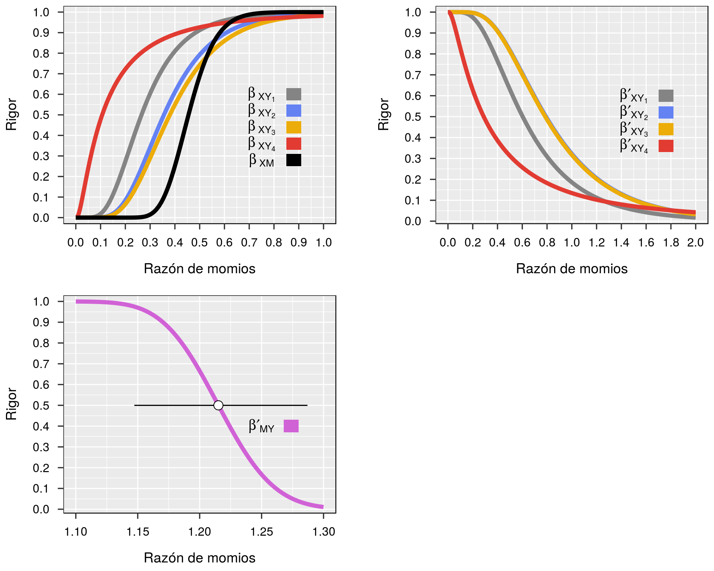
\({\;\;\;\;\;\;}\) El parámetro \(\beta^\prime_{MY}\) es interpretado como sigue: si su valor real fuera, aproximadamente, 1.15, entonces se habría obtenido con un 97.5% de probabilidad un efecto menor al estimado (\(\simeq{1.21}\)). Por tanto, la inferencia \(\beta^\prime_{MY} > 1.15\) pasa el test con alto rigor. Igualmente, si el valor real del parámetro \(\beta^\prime_{XY_1}\) fuera 0.2, entonces se habría observado, con un 97.5% de probabilidad, un efecto mayor al obtenido (\(\simeq{0.6}\)). Por tanto, podemos inferir con gran rigor que \(\beta^\prime_{XY_1} > 0.2\).9 Siguiendo el mismo principio, podemos estimar los NDE, NIE y TE de cada categoría que estamos en disposición de inferir con rigor. Para ello computamos tales efectos usando un valor de los parámetros para los que se cuente con suficiente evidencia. En el caso de \(\beta^\prime_{MY}\) hemos constatado buena evidencia que es superior a 1.15. En cuanto a \(\beta_{XM}\), podemos garantizar con otro 97.5% de rigor que la razón de momios es inferior a 0.662. Respecto a las \(\beta^\prime_{MY}\), no podemos inferir con rigor que desempeñen algún efecto por lo que las ponemos a 0. De esta manera, el NDE es 0 y el NIE es similar al efecto total (TE). Tras realizar las simulaciones para estimar las condiciones contrafactuales, los resultados indican que el máximo efecto que podemos inferir con más que razonable evidencia es un aumento de, al menos, un 9.9% de probabilidades de puntuar en la primera categoría en detrimento de las categorías 3, 4 y 5.
Intercept <- summary_modelo_XM[1, "Estimate"]
Coefficient <- summary_modelo_XM["Grupo", "Estimate"] + summary_modelo_XM["Grupo", "Std. Error"] * qnorm(0.975)
prob1 <- exp(Intercept + 1 * Coefficient) / (1 + exp(Intercept + 1 * Coefficient))
prob0 <- exp(Intercept) / (1 + exp(Intercept))
Intercepto_1 <- summary_modelo_XMY[1, "Estimate"]
Intercepto_2 <- summary_modelo_XMY[2, "Estimate"]
Intercepto_3 <- summary_modelo_XMY[3, "Estimate"]
Intercepto_4 <- summary_modelo_XMY[4, "Estimate"]
beta_X1 <- 0
beta_X2 <- 0
beta_X3 <- 0
beta_X4 <- 0
beta_M <- -summary_modelo_XMY[9, "Estimate"] + summary_modelo_XMY[9, "Std. Error"] * qnorm(0.025)
set.seed(1)
for (i in 1:simulaciones) {
M1 <- rbetabinom(n, size = 40, prob1, rho = rho)
M0 <- rbetabinom(n, size = 40, prob0, rho = rho)
Y0M0 <- predictPO(Si = M0, Grupo = 0,
Intercepto_1 = Intercepto_1, Intercepto_2 = Intercepto_2, Intercepto_3 = Intercepto_3,
Intercepto_4 = Intercepto_4, beta_X1= beta_X1, beta_X2 = beta_X2,
beta_X3 = beta_X3, beta_X4 = beta_X4, beta_M = beta_M)
Y0M1 <- predictPO(Si = M1, Grupo = 0,
Intercepto_1 = Intercepto_1, Intercepto_2 = Intercepto_2, Intercepto_3 = Intercepto_3,
Intercepto_4 = Intercepto_4, beta_X1= beta_X1, beta_X2 = beta_X2,
beta_X3 = beta_X3, beta_X4 = beta_X4, beta_M = beta_M)
NIE <- Y0M1 - Y0M0 # Natural indirect effect
NIE_matrix[i, ] <- apply(NIE, MARGIN = 2, mean)
}
Severe_NIE <- apply(NIE_matrix, MARGIN = 2, mean)
Severe_NIE <- as.data.frame(Severe_NIE)
rownames(Severe_NIE) <- c(paste("Categoría", 1:5, sep = " "))
colnames(Severe_NIE) <- "Máximo NIE con alto rigor"
kable(Severe_NIE, digits = 3, align = "c") %>%
kable_styling(bootstrap_options = "striped", full_width = F)| Máximo NIE con alto rigor | |
|---|---|
| Categoría 1 | 0.099 |
| Categoría 2 | 0.008 |
| Categoría 3 | -0.034 |
| Categoría 4 | -0.059 |
| Categoría 5 | -0.014 |
Con la finalidad de familiarizar al lector con esta manera de interpretar la evidencia estadística se ha desarrollado una app, disponible en la plataforma Shiny , que permite obtener curvas de rigor para análisis simples: Severity. La notación empleada en esta app emula la utilizada por Mayo and Spanos (2011).
\({\;\;\;\;\;\;}\) Con el desarrollo de procesadores más potentes y sofisticado software los métodos bayesianos han ido adquiriendo creciente popularidad. Sin embargo, las diferencias que los separan de los tradicionales no son nimios sino que trascienden hasta el mismo concepto de probabilidad. Este término ya no es interpretado como la frecuencia de un evento en un proceso aleatorio sino que atañe una noción personal y subjetiva. Esta nueva noción está presente en el Teorema de Bayes como una distribución a priori \(p(\theta)\) que representa la verosimilitud subjetiva de cada posible valor del parámetro antes de observar los datos.
\({\;\;\;\;\;\;}\) Teorema de Bayes:
\[ p(\theta\, | \,y) = \frac{p(y\, | \,\theta)}{p(y)} \,p(\theta) \]
\({\;\;\;\;\;\;}\) Consecuentemente, el término evidencia también es reconceptualizado pues ya no se pretende evaluar el grado de rigor con el que distintas afirmaciones sobre el valor del parámetro pasan el test sino conocer su distribución probabilística. Particularmente, el enfoque adoptado en esta sección considera que algo se corresponde con evidencia cuando provoca un cambio en la creencia que una persona mantiene respecto a una hipótesis (Morey, Romeijn, and Rouder 2016). Reordenando el Teorema de Bayes, podemos comprobar que dicho cambio viene dado por la razón entre la distribución posterior y la distribución a priori, que es equivalente a la razón entre la probabilidad de las observaciones bajo cada posible valor del parámetro, \(p(y \, | \, \theta)\) o likelihood, y la probabilidad de las mismas observaciones promediadas por todos los posibles valores del parámetro, \(p(y)\) o marginal likelihood:
\[ \frac{p(\theta\, | \,y)}{p(\theta)} = \frac{p(y\, | \,\theta)}{p(y)} \]
\({\;\;\;\;\;\;}\) Este término es denominado razón de evidencia (evidence ratio) e indica en qué medida debe actualizarse la creencia probabilística sobre \(\theta\), codificada en la distribución a priori \(p(\theta)\), para convertirse en la distribución posterior \(p(\theta\, | \,y)\).
\({\;\;\;\;\;\;}\) La idea fundamental en esta sección consiste en la generalización de esta perspectiva para comparar, directamente, distintas hipótesis o modelos:
\[ \frac{p(Modelo_{\,1}\, | \,y)}{p(Modelo_{\,0}\, | \,y)} = \frac{p(y\, | \,Modelo_{\,1})}{p(y\, | \,Modelo_{\,0})} \,\frac{p(Modelo_{\,1})}{p(Modelo_{\,0})} \]
\({\;\;\;\;\;\;}\) Y la consecuente razón de evidencia es conocida con el nombre de factor de Bayes:
\[ \text{BF} = \frac{p(y\, | \,Modelo_{\,1})}{p(y\, | \,Modelo_{\,0})} \]
\({\;\;\;\;\;\;}\) De esta manera, el factor de Bayes se corresponde con la razón de los marginal likelihoods10 de cada modelo y cuantifican la magnitud en que los datos modifican las probabilidades que un investigador pone en cada hipótesis, interpretadas estas como creencias.
\({\;\;\;\;\;\;}\) Volviendo al experimento sobre la intervención educativa, debemos comenzar especificando los modelos betabinomial y logístico cumulativo con distribuciones a priori sobre sus parámetros que representen nuestras hipótesis:
\[ k \, | \, n \sim \text{Binomial}(\theta, \text{n})\] \[ \theta \sim \text{Beta}(\alpha, \beta) \] \[ \alpha = \text{inverse logit}(\text{Intercept} + X\beta_{XM}) \, \left(\frac{1 - \text{rho}}{\text{rho}}\right) \] \[ \beta = \text{inverse logit}(\text{- Intercept} - X\beta_{XM}) \, \left(\frac{1 - \text{rho}}{\text{rho}}\right) \] \[ \alpha \sim \text{Normal}(0, 1) \] \[ \beta_{XM} \sim \text{HalfCauchy}(0, 1) \] \[ \text{rho} \sim \text{Uniform}(0, 1) \]
\[\text{logit}(Y \le j) = \alpha_j - X\beta^\prime_{XY_j} - M\beta^\prime_{MY}\] \[ \alpha_j \sim \text{Normal}(0, 1) \] \[ \beta^\prime_{XY_j} \sim \text{Normal}(0, 5) \] \[ \beta^\prime_{MY} \sim \text{HalfCauchy}(0, 1) \]
# Vamos a plotear las distribuciones a priori que representan las hipótesis de los investigadores:
par(mfrow = c(2, 3))
# Creamos una función para la distribución de densidad del halfcauchy:
halfcauchy <- function(x) dcauchy(x, 0, 1) * as.integer(x>=0) * as.integer(x<Inf)
K <- 1 / integrate(halfcauchy, 0, Inf)$value
dhalfcauchy <- function(x) K * halfcauchy(x)
integrate(dhalfcauchy, -Inf, Inf) # Nos aseguramos de que la función integra a 1.
## 1 with absolute error < 1.6e-10
curve(dnorm(x, 0, 1), xlim = c(-3, 3), main = expression(alpha), ylab = "Densidad", xlab = "")
# Centrando los predictores, al situar el intercepto en torno a 0 estamos concediendo la misma probabilidad a priori de 0.5 de administrar y no administrar el fármaco para todos los participantes antes de pasar por la intervención.
curve(dhalfcauchy(-x), xlim = c(-5, 1), main = expression(beta[XM]), ylab = "Densidad", xlab = "")
curve(dunif(x, 0, 1), xlim = c(0, 1), main = "rho", xlab = NULL)
curve(dnorm(x, 0, 1), xlim = c(-3, 3), main = expression(alpha[j]), ylab = "Densidad", xlab = "")
# Centrando los predictores, al situar el intercepto en torno a 0 estamos concediendo la misma probabilidad a priori de 0.5 de seleccionar una categoría igual o menor para todos los participantes antes de pasar por la intervención.
curve(dhalfcauchy(-x), xlim = c(-5, 1), main = expression(beta*minute[MY]), ylab = "Densidad", xlab = "")
curve(dnorm(x, 0, 5), xlim = c(-15, 15), main = expression(beta*minute[XY[j]]), ylab = "Densidad", xlab = "")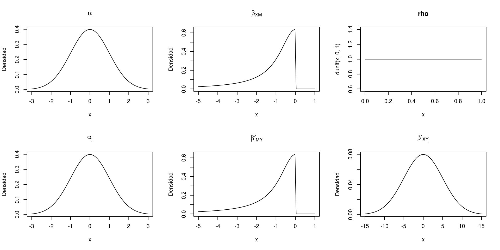
\({\;\;\;\;\;\;}\) A continuación, podemos testar la presencia de un efecto mediacional basándonos en el método clásico del producto de coeficientes descrito en Nuijten et al. (2015). En primer lugar, obtenemos el factor de Bayes que corresponde al efecto de la intervención sobre la probabilidad de administrar el fármaco comparando las predicciones del modelo betabinomial descrito anteriormente, al que denominaremos \(M_1\), con otro modelo similar pero sin el parámetro \(\beta_{XM}\) y que llamaremos \(M_0\).
# Modelo betabinomial con el parámetro \beta_{XM}:
M1 <- "
// Primero declaramos los datos:
data {
int<lower=1> N; // N es un número entero que designa el número de observaciones.
int<lower=0, upper=40> Y[N]; // Y es un vector N de números enteros que designa el nñumero de administraciones del fármaco.
vector[N] Grupo; // Vector N que designa la intervención educativa.
}
// Centramos los predictores para que sea más sencillo situar los priors en los interceptos.
transformed data {
vector[N] Centered_Grupo;
Centered_Grupo = Grupo - mean(Grupo);
}
// Declaramos los parámetros:
parameters {
real intercept;
real beta_Grupo; // We could put <upper=0> here but it lowers the effective sample size.
real<lower=0, upper=1> rho; // Correlación[0, 1]
}
transformed parameters {
// Parámetros de la distribución beta:
vector[N] alpha;
vector[N] beta;
for (n in 1:N) {
alpha[n] = inv_logit(intercept + Centered_Grupo[n] * beta_Grupo) * (1 - rho) / rho;
beta[n] = (1 - inv_logit(intercept + Centered_Grupo[n] * beta_Grupo)) * (1 - rho) / rho;
}
}
model {
target += normal_lpdf(intercept | 0, 1);
target += cauchy_lpdf(beta_Grupo | 0, 1) - cauchy_lccdf(0 | 0, 1);
target += uniform_lpdf(rho | 0, 1);
for (n in 1:N) {
target += beta_binomial_lpmf(Y[n] | 40, alpha[n], beta[n]); // Likelihood
}
}
"
# Modelo sin el parámetro \beta_{XM}:
M0 <- "
data {
int<lower=1> N; // number of observations.
int<lower=0, upper=40> Y[N];
}
parameters {
real intercept;
real<lower=0, upper=1> rho;
}
transformed parameters {
vector[N] alpha;
vector[N] beta;
for (n in 1:N) {
alpha[n] = inv_logit(intercept) * (1 - rho) / rho;
beta[n] = (1 - inv_logit(intercept)) * (1 - rho) / rho;
}
}
model {
target += normal_lpdf(intercept | 0, 1);
target += uniform_lpdf(rho | 0, 1);
for (n in 1:N) {
target += beta_binomial_lpmf(Y[n] | 40, alpha[n], beta[n]);
}
}
"
# Compilamos los modelos:
model_M1 <- stan_model(model_code = M1, model_name = "stanmodel")
model_M0 <- stan_model(model_code = M0, model_name = "stanmodel")
data.list <- list(N = nrow(mydata), Y = mydata$Si, Grupo = mydata$Grupo) # Preparamos los datos en una lista
# Tomamos muestras de la distribución posterior de los parámetros en cada modelo:
fit_M1 <- sampling(model_M1, data = data.list, iter = 10000, warmup = 2000, chains = 4, cores = 4, control = list(adapt_delta = 0.8), seed = 1)
# Tras este comando se visualizará la progresión de las cadenas de montecarlo.
fit_M0 <- sampling(model_M0, data = data.list, iter = 10000, warmup = 2000, chains = 4, cores = 4, control = list(adapt_delta = 0.8), seed = 1)
# Utilizamos el método Bridge sampling para estimar el marginal likelihood (en logaritmos):
ML_M1 <- bridge_sampler(fit_M1, silent = TRUE)
ML_M0 <- bridge_sampler(fit_M0, silent = TRUE)
# Errores de medida en la estimación de los marginal likelihoods:
# error_measures(ML_M1)$percentage
# error_measures(ML_M0)$percentage\({\;\;\;\;\;\;}\) Igualmente, tenemos que computar la evidencia del parámetro \(\beta^\prime_{MY}\) comparando las predicciones del modelo logístico cumulativo anterior (\(M_2\)) con las del mismo modelo sin dicho parámetro (\(M_3\)).
# A continuación ajustamos el modelo logístico cumulativo parcial con y sin el parámetro \beta^\prime_{MY}:
M2 <- "
// Stan no provee de ninguna función para aplicar este tipo de modelo por lo que creamos una función para aplicarlo:
functions {
real cumulative_logit_lpmf(int Y, real eta1, real eta2, real eta3, real eta4, vector c) {
vector[5] p; // Vector de probabilidades de cada categoría.
p[1] = inv_logit(c[1] - eta1);
p[2] = inv_logit(c[2] - eta2) - p[1];
p[3] = inv_logit(c[3] - eta3) - p[1] - p[2];
p[4] = inv_logit(c[4] - eta4) - p[1] - p[2] - p[3];
p[5] = 1 - p[1] - p[2] - p[3] - p[4];
return categorical_lpmf(Y | p); // Distribución categórica.
}
}
data {
int<lower=0> N;
int<lower=1, upper=5> Y[N];
matrix[N, 2] Predictors; // Matrix de predictores (No el design matrix).
}
// Centramos los predictores:
transformed data {
matrix[N, 2] Centered_Predictors;
vector[2] Predictors_means;
for (i in 1:2) {
Predictors_means[i] = mean(Predictors[, i]);
Centered_Predictors[, i] = Predictors[, i] - Predictors_means[i];
}
}
parameters {
vector[4] betas; // Declaramos los coeficientes de la intervención para cada punto de corte.
real beta; // Coeficiente para el número de administraciones del fármaco.
ordered[4] c; // Interceptos cuando los predictores están centrados.
}
transformed parameters {
matrix[N, 4] eta;
for (n in 1:N) {
eta[n, 1] = Centered_Predictors[n, 1] * betas[1] + Centered_Predictors[n, 2] * beta;
eta[n, 2] = Centered_Predictors[n, 1] * betas[2] + Centered_Predictors[n, 2] * beta;
eta[n, 3] = Centered_Predictors[n, 1] * betas[3] + Centered_Predictors[n, 2] * beta;
eta[n, 4] = Centered_Predictors[n, 1] * betas[4] + Centered_Predictors[n, 2] * beta;
}
}
model {
target += cauchy_lpdf(betas | 0, 5);
target += cauchy_lpdf(beta | 0, 1) - cauchy_lccdf(0 | 0, 1);
target += normal_lpdf(c | 0, 1);
for (n in 1:N) {
target += cumulative_logit_lpmf(Y[n] | eta[n, 1], eta[n, 2], eta[n, 3], eta[n, 4], c);
}
}
"
# Repetimos el mismo modelo pero sin el parámetro de interés:
M3 <- "
functions {
real cumulative_logit_lpmf(int Y, real eta1, real eta2, real eta3, real eta4, vector c) {
vector[5] p;
p[1] = inv_logit(c[1] - eta1);
p[2] = inv_logit(c[2] - eta2) - p[1];
p[3] = inv_logit(c[3] - eta3) - p[1] - p[2];
p[4] = inv_logit(c[4] - eta4) - p[1] - p[2] - p[3];
p[5] = 1 - p[1] - p[2] - p[3] - p[4];
return categorical_lpmf(Y | p);
}
}
data {
int<lower=0> N;
int<lower=1, upper=5> Y[N];
matrix[N, 2] Predictors;
}
transformed data {
matrix[N, 2] Centered_Predictors;
vector[2] Predictors_means;
for (i in 1:2) {
Predictors_means[i] = mean(Predictors[, i]);
Centered_Predictors[, i] = Predictors[, i] - Predictors_means[i];
}
}
parameters {
vector[4] betas;
ordered[4] c;
}
transformed parameters {
matrix[N, 4] eta;
for (n in 1:N) {
eta[n, 1] = Centered_Predictors[n, 1] * betas[1];
eta[n, 2] = Centered_Predictors[n, 1] * betas[2];
eta[n, 3] = Centered_Predictors[n, 1] * betas[3];
eta[n, 4] = Centered_Predictors[n, 1] * betas[4];
}
}
model {
target += normal_lpdf(betas | 0, 5);
target += normal_lpdf(c | 0, 1);
for (n in 1:N) {
target += cumulative_logit_lpmf(Y[n] | eta[n, 1], eta[n, 2], eta[n, 3], eta[n, 4], c);
}
}
"
# Compilamos los modelos:
model_M2 <- stan_model(model_code = M2, model_name = "stanmodel")
model_M3 <- stan_model(model_code = M3, model_name = "stanmodel")
# Creamos una lista con los datos:
data.list <- list(N = nrow(mydata), Y = mydata$Indicador, Predictors = cbind(mydata$Grupo, mydata$Si))
# Tomamos muestras de la distribución posterior de ambos modelos:
fit_M2 <- sampling(model_M2, data = data.list, iter = 10000, warmup = 2000, chains = 4, cores = 4, init = 0,
control = list(adapt_delta = .995), seed = 1)
fit_M3 <- sampling(model_M3, data = data.list, iter = 10000, warmup = 2000, chains = 4, cores = 4, init = 0,
control = list(adapt_delta = .99), seed = 1)
# Computamos el logaritmo de los marginal likelihoods:
ML_M2 <- bridge_sampler(fit_M2, method = "normal", silent = TRUE)
ML_M3 <- bridge_sampler(fit_M3, method = "normal", silent = TRUE)
# Errores de medida al computar los marginal likelihoods:
# error_measures(ML_M2)$percentage
# error_measures(ML_M3)$percentage\({\;\;\;\;\;\;}\) De esta manera, si \(\text{BF}_{10} > 1\) y \(\text{BF}_{23} > 1\) entonces existe evidencia a favor del modelo \(M_1\) y \(M_2\), respectivamente, indicando, a su vez, que existe evidencia a favor de la mediación. Sin embargo, la evidencia o factor de Bayes de este efecto mediacional es obtenido a través de la multiplicación de las probabilidades posteriores, para las cuales debemos especificar la credibilidad que concedemos a cada hipótesis (\(M_0\), \(M_1\), \(M_2\), \(M_3\)):
\[ \text{BF}_{mediación} = \frac{p(M_1\, | \,y) \cdot p(M_2\, | \,y)}{1 - p(M_1\, | \,y) \cdot p(M_2\, | \,y)} \]
\[ \frac{p(M_1\, | \,y)}{p(M_0\, | \,y)} = \text{BF}_{10} \, \frac{p(M_1)}{p(M_0)} \]
BF10 <- bf(ML_M1, ML_M0)$bf # Factor de Bayes
BF10
## [1] 523.2004\[ \frac{p(M_2\, | \,y)}{p(M_3\, | \,y)} = \text{BF}_{23} \, \frac{p(M_2)}{p(M_3)} \]
BF23 <- bf(ML_M2, ML_M3)$bf # Factor de Bayes.
BF23
## [1] 141188650983\({\;\;\;\;\;\;}\) Siguiendo estos pasos, se estima que los datos obtenidos en el experimento son 523 veces más probables de observar en el modelo betabinomial con el parámetro \(\beta_{XM}\) (\(M_1\)) que en el mismo modelo sin dicho parámetro (\(M_0\)), es decir, \(\text{BF}_{10} \simeq 523\). Por contraparte, \(\text{BF}_{23}\) arroja una cifra de 12 dígitos (\(1.4 \cdot 10^{11}\)), es decir, una evidencia tan grande a favor del modelo ordinal con el parámetro \(\beta^\prime_{MY}\) (\(M_2\)) que podría modificar cualquier creencia a favor del mismo modelo sin dicho parámetro (\(M_3\)). Una vez obtenidos estos valores, procedemos a computar la probabilidad posterior de \(M_0\), \(M_1\), \(M_2\) y \(M_3\) asignando nuestras creencias previas, en forma de probabilidad, en dichas hipótesis. Por ejemplo, podemos mostrarnos escépticos y pensar que \(p(M_1) = p(M_2) = 0.25\) y \(p(M_0) = p(M_3) = 0.75\), en cuyo caso
\[\frac{p(Modelo_{\,1})}{p(Modelo_{\,0})} = \frac{p(Modelo_{\,2})}{p(Modelo_{\,3})} = \frac{1}{3}.\]
Esto quiere decir que, antes de observar los datos, creemos que los modelos sin el parámetro extra son 3 veces más probables. Así, tenemos que
\[ \frac{p(M_1\, | \,y)}{p(M_0\, | \,y)} = \text{BF}_{10} \, \frac{p(M_1)}{p(M_0)} \simeq 523 \cdot \frac{0.25}{0.75} \simeq 174.4 \]
BF10 * (1/3)
## [1] 174.4001\[ p(M_1\, | \,y) \simeq \frac{174.4}{1 + 174.4} \simeq 0.994 \]
post_prob_M1_M0 <- post_prob(ML_M1, ML_M0, prior_prob = c(.25, .75))
post_prob_M1_M0[1]
## ML_M1
## 0.9942987\[ \frac{p(M_2\, | \,y)}{p(M_3\, | \,y)} = \text{BF}_{23} \, \frac{p(M_2)}{p(M_3)} \simeq 1.4 \cdot 10^{11} \cdot \frac{0.25}{0.75} \simeq 4.7 \cdot 10^{10} \]
BF23 * (1/3)
## [1] 47062883661\[ p(M_2\, | \,y) \simeq 1 \]
post_prob_M2_M3 <- post_prob(ML_M2, ML_M3, prior_prob = c(.25, .75))
post_prob_M2_M3[1]
## ML_M2
## 1\[\text{probabilidad de mediación} = p(M_1\, | \,y) \cdot p(M_2\, | \,y) \simeq 0.994 \]
# Probabilidad de mediación:
(post_prob_M1_M0[1] * post_prob_M2_M3[1])
## ML_M1
## 0.9942987\({\;\;\;\;\;\;}\) lo que quiere decir que
\[\text{BF}_{mediación} \simeq \frac{0.994}{1 - 0.994} \simeq 174.4\]
# Factor de Bayes de la mediación:
BF_mediacion <- (post_prob_M1_M0[1] * post_prob_M2_M3[1]) / ( 1 - post_prob_M1_M0[1] * post_prob_M2_M3[1])
BF_mediacion
## ML_M1
## 174.4001\({\;\;\;\;\;\;}\) Estos resultados nos indican que los datos observados son 174 veces más probables bajo la hipótesis mediacional compuesta por \(M_1\) y \(M_2\) que la no mediacional, compuesta por \(M_0\) y \(M_3\).
\({\;\;\;\;\;\;}\) Los autores del paper original (Barberia 2018) reportaron un t-test bayesiano ordinario con varianzas equivalentes entre grupos. Aunque este método es computacionalmente menos eficiente, también podemos aproximar el factor de Bayes especificando el t-test en Stan y usando bridge sampling. La parametrización de este modelo está especificado en Wetzels et al. (2009) con la diferencia de presentar las siguientes distribuciones a priori:
\[ \mu \sim \text{Cauchy}(0, 1) \] \[ \delta \sim \text{HalfCauchy}(0, .7071) \] \[ \sigma \sim \frac{1}{\sigma} \]
\({\;\;\;\;\;\;}\) Los likelihoods son:
\[ Y_1 \sim \text{Normal}(\mu - \mu_{diferencia} \, \cdot \, \alpha\,{_0}, \sigma)\] \[ Y_0 \sim \text{Normal}(\mu + \mu_{diferencia} \, \cdot \, \alpha{\,_1}, \sigma)\] donde, \(Y_1\) representa a los participantes que reciben la intervención, \(Y_2\) representa a los que no reciben la intervención, \(\mu\) es el grand mean, \(\mu_{diferencia}\) es la diferencia media entre grupos, \(\alpha{\,_0}\) es la proporción de participantes en el grupo control y \(\alpha{\,_1}\) es la del grupo de intervención.
\({\;\;\;\;\;\;}\) La hipótesis nula descarta el parámetro \(\delta\), que es el tamaño del efecto estandarizado:
\[ \delta = \frac{\mu_{diferencia}}{\sigma} \]
# Este es el resultado reportado en el paper:
ttestBF(formula = Causal_Judgment ~ Group, data = data, nullInterval = c(0, Inf), rscale = 1/sqrt(2))
## Bayes factor analysis
## --------------
## [1] Alt., r=0.707 0<d<Inf : 0.05095193 ±0.12%
## [2] Alt., r=0.707 !(0<d<Inf) : 47.68974 ±0%
##
## Against denominator:
## Null, mu1-mu2 = 0
## ---
## Bayes factor type: BFindepSample, JZS\({\;\;\;\;\;\;}\) El factor de Bayes es de 47.69 a favor de la hipótesis alternativa.
\({\;\;\;\;\;\;}\) Vamos a parametrizar este modelo en Stan:
Y1 <- data$Causal_Judgment[mydata$Grupo == 1]
Y0 <- data$Causal_Judgment[mydata$Grupo == 0]
n1 <- length(data$Group[mydata$Grupo == 1])
n0 <- length(data$Group[mydata$Grupo == 0])
data.list <- list(n0 = n0, n1 = n1, ratio_1 = n1/nrow(data), ratio_0 = n0/nrow(data), Y1 = Y1, Y0 = Y0)
# Hipótesis nula:
Null <- "
data {
int<lower=1> n1; // Número de participantes en la condición de intervención.
int<lower=1> n0; // Número de participantes en la condición de no intervención.
vector[n1] Y1; // Observaciones en la condición de intervención.
vector[n0] Y0; // Observaciones en la condición de no intervención.
}
parameters {
real mu;
real<lower=0> sigma; // Desviación típica.
}
model {
target += cauchy_lpdf(mu | 0, 1); // Cauchy prior en la media.
target += log(1/sigma); // Jeffreys prior en la desviación típica.
// En este modelo nulo asumimos que no hay diferencias entre grupos por lo que ajustamos el mismo likelihood a ambos:
target += normal_lpdf(Y1 | mu, sigma); // likelihood
target += normal_lpdf(Y0 | mu, sigma); // likelihood
}
"
# Hipótesis alternativa:
Alternative <- "
data {
int<lower=1> n1; // Número de participantes en la condición de intervención.
int<lower=1> n0; // Número de participantes en la condición de no intervención.
vector[n1] Y1; // Observaciones en la condición de intervención.
vector[n0] Y0; // Observaciones en la condición de no intervención.
real<lower=0, upper=1> ratio_1; // Proporción de participantes en el grupo de intervención.
real<lower=0, upper=1> ratio_0; // Proporción de participantes en el grupo control.
}
parameters {
real mu; // El grand mean.
real delta; // Efecto estandarizado.
real<lower=0> sigma; // Desviación típica.
}
model {
target += cauchy_lpdf(mu | 0, 1); // Cauchy prior en el grand mean.
target += cauchy_lpdf(delta | 0, 1 / sqrt(2)) - cauchy_lccdf(0 | 0, 1 / sqrt(2)); // Half Cauchy prior en delta
target += log(1/sigma); // Jeffreys prior en la desviación típica.
target += normal_lpdf(Y1 | mu - delta * sigma * ratio_0, sigma); // likelihood para el grupo de intervención.
target += normal_lpdf(Y0 | mu + delta * sigma * ratio_1, sigma); // likelihood para el grupo de no intervención.
}
"
# Compilamos los modelos:
Null_model <- stan_model(model_code = Null, model_name = "stanmodel")
Alternative_model <- stan_model(model_code = Alternative, model_name = "stanmodel")
# Tomamos muestras de las distribuciones posteriores:
Null_fit <- sampling(Null_model, data = data.list, iter = 20000, warmup = 1000, chains = 4, cores = 4,
control = list(adapt_delta = .99), seed = 1)
Alternative_fit <- sampling(Alternative_model, data = data.list, iter = 20000, warmup = 1000, chains = 4, cores = 4,
control = list(adapt_delta = .99), seed = 1)
# Obtenemos los marginal likelihoods a través del método bridge sampling:
ML_Null <- bridge_sampler(Null_fit, silent = TRUE)
ML_Alternative <- bridge_sampler(Alternative_fit, silent = TRUE)
# Errores de medida en la computación de los marginal likelihoods
error_measures(ML_Null)$percentage
error_measures(ML_Alternative)$percentage## [1] "0.0288%"
## [1] "0.0297%"\({\;\;\;\;\;\;}\) Computamos el factor de Bayes a favor de la hipótesis con el parámetro \(\delta\):
BF_Alternative_Null <- bf(ML_Alternative, ML_Null) # Factor de Bayes.
BF_Alternative_Null## The estimated Bayes factor in favor of x1 over x2 is equal to: 47.68639\({\;\;\;\;\;\;}\) Es muy difícil que las hipótesis que un investigador quiere contrastar estén disponibles por defecto en los paquetes estadísticos actuales y probablemente nunca sean lo suficientemente flexibles para adaptarlas. Sin embargo, con Stan (Stan Development Team 2018) y el paquete brigdesampling (Gronau and Singmann 2017) siempre podremos especificar nuestra hipótesis y obtener el factor de Bayes.
# Para liberar memoria:
rm(fit_M0, fit_M1, fit_M2, fit_M3)\({\;\;\;\;\;\;}\) A diferencia del método anterior, el análisis bayesiano tradicional no pretende comparar modelos asignándoles probabilidades ni representar una hipótesis a través de distribuciones a priori en los parámetros. En su lugar, pretende obtener la distribución posterior de cada uno de ellos a partir de distribuciones a priori que asignan una mayor probabilidad a los valores más razonables y sancionan los menos razonables. De esta forma, el análisis bayesiano se puede considerar un método que optimiza o regulariza los resultados incorporando en la inferencia el conocimiento previo que los investigadores poseen acerca de los parámetros.
\({\;\;\;\;\;\;}\) En este caso simplemente queremos obtener la distribución de probabilidad posterior de los parámetros condicionando en los datos observados \(p(\theta \, | \, y)\). Por tanto, tan solo debemos volver a ajustar los anteriores modelos. También utilizaremos las mismas distribuciones a priori para mantener el análisis simple.
Modelo betabinomial:
# Esta vez utilizaremos el bloque denominado *generated quantities* para simular los datos necesarios para comprobar la adecuación del modelo a los datos observados.
# Modelo betabinomial:
betabinomial <- "
data {
int<lower=1> N;
int<lower=0, upper=40> Y[N];
vector[N] Grupo;
}
transformed data {
vector[N] Centered_Grupo;
Centered_Grupo = Grupo - mean(Grupo);
}
parameters {
real intercept;
real beta_Grupo; // We could put <upper=0> but it lowers the effective sample size.
real<lower=0, upper=1> rho;
}
transformed parameters {
vector[N] alpha;
vector[N] beta;
for (n in 1:N) {
alpha[n] = inv_logit(intercept + Centered_Grupo[n] * beta_Grupo) * (1 - rho) / rho;
beta[n] = (1 - inv_logit(intercept + Centered_Grupo[n] * beta_Grupo)) * (1 - rho) / rho;
}
}
model {
target += normal_lpdf(intercept | 0, 1);
target += cauchy_lpdf(beta_Grupo | 0, 1) - cauchy_lccdf(0 | 0, 1);
target += uniform_lpdf(rho | 0, 1);
for (n in 1:N) {
target += beta_binomial_lpmf(Y[n] | 40, alpha[n], beta[n]);
}
}
generated quantities {
real Intercept;
vector[N] log_lik; // Este es el logaritmo del likelihood, que nunca está de más para computar varias cosas como WAIC o LOO.
vector[N] posterior_predictions; // Estos son valores predichos del modelo. Comprobaremos si se adecúan a los observados (posterior predictive checks).
vector[N] M1; // Simulamos el número de administraciones del fármaco bajo no intervención.
vector[N] M0; // Simulamos el número de administraciones del fármaco bajo intervención.
Intercept = intercept - mean(Grupo) * beta_Grupo;
for(n in 1:N) {
log_lik[n] = beta_binomial_lpmf(Y[n] | 40, alpha[n], beta[n]);
posterior_predictions[n] = beta_binomial_rng(40, alpha[n], beta[n]);
M1[n] = beta_binomial_rng(40, inv_logit(Intercept + 1 * beta_Grupo) * (1 - rho) / rho,
(1 - inv_logit(Intercept + 1 * beta_Grupo)) * (1 - rho) / rho);
M0[n] = beta_binomial_rng(40, inv_logit(Intercept) * (1 - rho) / rho, (1 - inv_logit(Intercept)) * (1 - rho) / rho);
}
}
"
data.list <- list(N = nrow(mydata), Y = mydata$Si, Grupo = mydata$Grupo)
modelo_betabinomial <- stan_model(model_code = betabinomial, model_name = "stanmodel")
# Se recomienda tomar menos muestras reduciendo el número de iteraciones de 27000 a 10000. De lo contrario, el proceso será largo.
# Rebajar "cores = 8" al número de núcleos disponibles.
fit_modelo_betabinomial <- sampling(modelo_betabinomial, data = data.list, chains = 4, control = list(adapt_delta = 0.8),
iter = 10000, warmup = 2000, cores = 8, seed = 1)
# Se extraen 10000 muestras por cadena, descartando las 2000 primeras (período de adaptación de la cadena montecarlo). En total extraemos 32 muestras de la distribución posterior.
print(fit_modelo_betabinomial, probs = c(0.025, 0.5, 0.975), pars = c("Intercept", "beta_Grupo"))## Inference for Stan model: stanmodel.
## 4 chains, each with iter=10000; warmup=2000; thin=1;
## post-warmup draws per chain=8000, total post-warmup draws=32000.
##
## mean se_mean sd 2.5% 50% 97.5% n_eff Rhat
## Intercept 0.47 0 0.13 0.22 0.47 0.72 32000 1
## beta_Grupo -0.75 0 0.19 -1.14 -0.75 -0.38 32000 1
##
## Samples were drawn using NUTS(diag_e) at Mon May 28 23:02:35 2018.
## For each parameter, n_eff is a crude measure of effective sample size,
## and Rhat is the potential scale reduction factor on split chains (at
## convergence, Rhat=1).Modelo logístico cumulativo parcial:
ordinal <- "
functions {
real cumulative_logit_lpmf(int Y, real eta1, real eta2, real eta3, real eta4, vector c) {
vector[5] p;
p[1] = inv_logit(c[1] - eta1);
p[2] = inv_logit(c[2] - eta2) - p[1];
p[3] = inv_logit(c[3] - eta3) - p[1] - p[2];
p[4] = inv_logit(c[4] - eta4) - p[1] - p[2] - p[3];
p[5] = 1 - p[1] - p[2] - p[3] - p[4];
return categorical_lpmf(Y | p);
}
}
data {
int<lower=0> N; // number of observations.
int<lower=1, upper=5> Y[N];
matrix[N, 2] Predictors;
}
transformed data {
matrix[N, 2] Centered_Predictors;
vector[2] Predictors_means;
for (i in 1:2) {
Predictors_means[i] = mean(Predictors[, i]);
Centered_Predictors[, i] = Predictors[, i] - Predictors_means[i];
}
}
parameters {
vector[4] betas;
real beta;
ordered[4] c; // Intercepts.
}
transformed parameters {
matrix[N, 4] eta;
for (n in 1:N) {
eta[n, 1] = Centered_Predictors[n, 1] * betas[1] + Centered_Predictors[n, 2] * beta;
eta[n, 2] = Centered_Predictors[n, 1] * betas[2] + Centered_Predictors[n, 2] * beta;
eta[n, 3] = Centered_Predictors[n, 1] * betas[3] + Centered_Predictors[n, 2] * beta;
eta[n, 4] = Centered_Predictors[n, 1] * betas[4] + Centered_Predictors[n, 2] * beta;
}
}
model {
target += cauchy_lpdf(betas | 0, 5);
target += cauchy_lpdf(beta | 0, 1) - cauchy_lccdf(0 | 0, 1);
target += normal_lpdf(c | 0, 1);
for (n in 1:N) {
target += cumulative_logit_lpmf(Y[n] | eta[n, 1], eta[n, 2], eta[n, 3], eta[n, 4], c);
}
}
generated quantities {
vector[4] Intercepts;
matrix[N, 5] p;
vector[5] probs;
vector[N] log_lik;
vector[N] posterior_predictions;
Intercepts = c + Predictors_means[1] * betas[1:4] + Predictors_means[2] * beta;
for (n in 1:N) {
p[n, 1] = inv_logit(c[1] - eta[n, 1]);
p[n, 2] = inv_logit(c[2] - eta[n, 2]) - p[n, 1];
p[n, 3] = inv_logit(c[3] - eta[n, 3]) - p[n, 1] - p[n, 2];
p[n, 4] = inv_logit(c[4] - eta[n, 4]) - p[n, 1] - p[n, 2] - p[n, 3];
p[n, 5] = 1 - p[n, 1] - p[n, 2] - p[n, 3] - p[n, 4];
probs[1] = p[n, 1]; probs[2] = p[n, 2]; probs[3] = p[n, 3]; probs[4] = p[n, 4]; probs[5] = p[n, 5];
log_lik[n] = categorical_lpmf(Y[n] | probs);
posterior_predictions[n] = categorical_rng(probs);
}
}
"
data.list <- list(N = nrow(mydata), Y = mydata$Indicador, Predictors = cbind(mydata$Grupo, mydata$Si))
modelo_ordinal <- stan_model(model_code = ordinal, model_name = "stanmodel")
fit_modelo_ordinal <- sampling(modelo_ordinal, data = data.list, chains = 4, init = 0, control = list(adapt_delta = 0.995),
iter = 10000, warmup = 2000, cores = 8, seed = 1)
# Existen 4 divergencias (comportamiento extraño de las cadenas) pero son inofensivas.
print(fit_modelo_ordinal, probs = c(0.025, 0.5, 0.975), pars = c("Intercepts", "betas", "beta"))## Inference for Stan model: stanmodel.
## 4 chains, each with iter=10000; warmup=2000; thin=1;
## post-warmup draws per chain=8000, total post-warmup draws=32000.
##
## mean se_mean sd 2.5% 50% 97.5% n_eff Rhat
## Intercepts[1] 2.10 0.00 0.67 0.81 2.09 3.45 21797 1
## Intercepts[2] 2.95 0.00 0.66 1.71 2.92 4.29 22441 1
## Intercepts[3] 4.54 0.00 0.71 3.19 4.52 5.98 21140 1
## Intercepts[4] 6.66 0.01 0.88 5.03 6.63 8.47 21205 1
## betas[1] -0.51 0.00 0.53 -1.56 -0.50 0.53 18655 1
## betas[2] -0.26 0.00 0.48 -1.20 -0.26 0.68 18606 1
## betas[3] -0.25 0.00 0.48 -1.18 -0.26 0.68 22116 1
## betas[4] -0.73 0.01 0.82 -2.44 -0.69 0.78 20903 1
## beta 0.18 0.00 0.03 0.13 0.18 0.24 21778 1
##
## Samples were drawn using NUTS(diag_e) at Mon May 28 23:05:04 2018.
## For each parameter, n_eff is a crude measure of effective sample size,
## and Rhat is the potential scale reduction factor on split chains (at
## convergence, Rhat=1).\({\;\;\;\;\;\;}\) A continuación podemos realizar algunos diagnósticos del comportamiento de las cadenas de Markov y extraer los parámetros y otros objetos para explorar las implicaciones de los modelos:
Modelo Betabinomial:
betabinomial_chains <- mcmc_trace(as.array(fit_modelo_betabinomial), pars = c("Intercept", "beta_Grupo"))
# Extraemos el logaritmo del likelihood:
betabinomial_log_lik <- extract_log_lik(fit_modelo_betabinomial)
# Computamos LOO, que es mejor que WAIC y es una medida que podemos usar para comparar modelos.
betabinomial_n_eff <- relative_eff(exp(betabinomial_log_lik), chain_id = rep(1:4, each = nrow(betabinomial_log_lik) / 4), cores = 4)
betabinomial_loo <- loo(betabinomial_log_lik, r_eff = betabinomial_n_eff, cores = 4)
betabinomial_waic <- waic(betabinomial_log_lik, cores = 4) # También computamos WAIC.
# Extraemos las estimaciones de los parámetros:
post_modelo_betabinomial <- extract(fit_modelo_betabinomial,
pars = c('posterior_predictions', "Intercept", "alpha", "beta", "beta_Grupo", "rho", 'M1', 'M0'))
# Vamos a visualizar la distribución beta media que sigue la probabilidad de administrar el fármaco para cada condición (intervención y no intervención).
betabinomial_alpha <- apply(post_modelo_betabinomial$alpha, FUN = mean, MARGIN = 2)
betabinomial_beta <- apply(post_modelo_betabinomial$beta, FUN = mean, MARGIN = 2)
alphas_control <- as.numeric(post_modelo_betabinomial$alpha[, 1:47])
betas_control <- as.numeric(post_modelo_betabinomial$beta[, 1:47])
alphas_intervention <- as.numeric(post_modelo_betabinomial$alpha[, 48:106])
betas_intervention <- as.numeric(post_modelo_betabinomial$beta[, 48:106])
# Comprobamos si las simulaciones del modelo se corresponden con los datos observados (posterior predictive checks):
# Proporción de administraciones del fármaco de cada participante (debería ser la misma entre los miembros del mismo grupo):
individual_probs <- apply(post_modelo_betabinomial$posterior_predictions, FUN = function(x) mean(x) / 40, MARGIN = 2)
intervencion_prob <- mean(individual_probs[mydata$Grupo == 1])
control_prob <- mean(individual_probs[mydata$Grupo == 0])\({\;\;\;\;\;\;}\) Comprobamos si las cadenas de Markov se comportan bien:
check_all_diagnostics(fit_modelo_ordinal)
## [1] "n_eff / iter looks reasonable for all parameters"
## [1] "Rhat looks reasonable for all parameters"
## [1] "4 of 32000 iterations ended with a divergence (0.0125%)"
## [1] " Try running with larger adapt_delta to remove the divergences"
## [1] "0 of 32000 iterations saturated the maximum tree depth of 10 (0%)"
## [1] "E-BFMI indicated no pathological behavior"
betabinomial_chains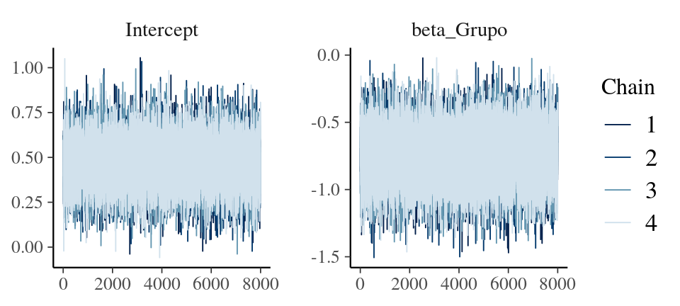
\({\;\;\;\;\;\;}\) Visualizamos LOO, WAIC, las distribuciones de probabilidad predichas por el modelo y realizamos un par de posterior predictive checks:
# Visualizamos LOO y WAIC:
print(betabinomial_loo, digits = 3)
##
## Computed from 32000 by 106 log-likelihood matrix
##
## Estimate SE
## elpd_loo -384.351 4.332
## p_loo 3.763 0.743
## looic 768.701 8.664
## ------
## Monte Carlo SE of elpd_loo is 0.013.
##
## All Pareto k estimates are good (k < 0.5).
## See help('pareto-k-diagnostic') for details.
print(betabinomial_waic, digits = 3)
##
## Computed from 32000 by 106 log-likelihood matrix
##
## Estimate SE
## elpd_waic -384.342 4.330
## p_waic 3.754 0.740
## waic 768.684 8.660
# Si ajustamos otros modelos, podemos compararlos usando estas magnitudes.
# Comprobamos si nuestro modelo acomoda bien los datos observados (posterior predictive checks):
intervencion_prob # Proporción estimada por nuestro modelo en el grupo de intervención.
## [1] 0.4297853
mean((mydata$Si / 40)[mydata$Grupo == 1]) # Proporción observada en el grupo de intervención.
## [1] 0.4361702
control_prob # Proporción estimada por nuestro modelo en el grupo de no intervención.
## [1] 0.6140977
mean((mydata$Si / 40)[mydata$Grupo == 0]) # Proporción observada en el grupo de no intervención.
## [1] 0.6122881
# Nuestro modelo describe bien el proceso que ha generado los datos.
# Visualizamos la distribución de la probabilidad de administrar el fármaco en la condición de intervención y de no intervención en su valor promediado y otras 100 distribuciones simuladas aleatoriamente de la distribución posterior de alpha y beta:
curve(dbeta(x, shape1 = unique(betabinomial_alpha)[1], shape2 = unique(betabinomial_beta)[1]), ylim = c(0, 2), col = "black", ylab = "Densidad", xlab = "Probabilidad", lwd = 0)
for(i in 1:100) {
curve(dbeta(x, shape1 = sample(alphas_control, 1), shape2 = sample(betas_control, 1)), add = T, col = "blue")
curve(dbeta(x, shape1 = sample(alphas_control, 1), shape2 = sample(betas_control, 1)), add = T, col = "blue")
curve(dbeta(x, shape1 = sample(alphas_intervention, 1), shape2 = sample(betas_intervention, 1)), add = T, col = "red")
curve(dbeta(x, shape1 = sample(alphas_intervention, 1), shape2 = sample(betas_intervention, 1)), add = T, col = "red")
}
# Distribuciones promediadas:
curve(dbeta(x, shape1 = unique(betabinomial_alpha)[1], shape2 = unique(betabinomial_beta)[1]), ylim = c(0, 2), col = "black", ylab = "Density", xlab = "Probability", add = T, lwd = 2)
curve(dbeta(x, shape1 = unique(betabinomial_alpha)[2], shape2 = unique(betabinomial_beta)[2]), add = T, col = "black", lwd = 2)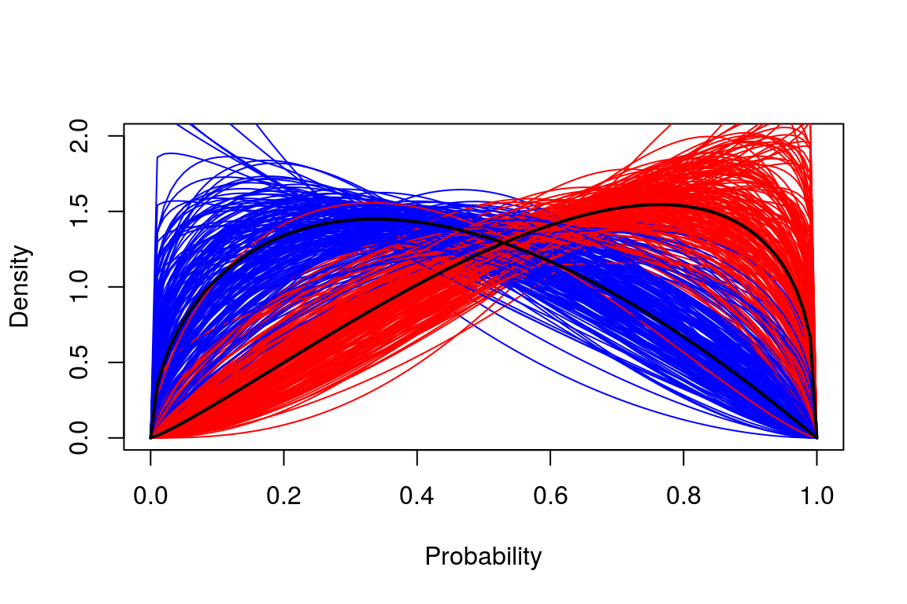
# Podemos comprobar que el grupo que no recibe la intervención (rojo) presenta mayor probabilidad de administrar el fármaco.Modelo logístico cumulativo parcial:
# Comprobamos las cadenas de montecarlo para diagnosticar alguna anomalía en las estimaciones:
ordinal_chains <- mcmc_trace(as.array(fit_modelo_ordinal), pars = c("Intercepts[1]", "Intercepts[2]", "Intercepts[3]", "Intercepts[4]", "betas[1]", "betas[2]", "betas[3]", "betas[4]", "beta"))
ordinal_log_lik <- extract_log_lik(fit_modelo_ordinal)
ordinal_n_eff <- relative_eff(exp(ordinal_log_lik), chain_id = rep(1:4, each = nrow(ordinal_log_lik) / 4), cores = 4)
ordinal_loo <- loo(ordinal_log_lik, r_eff = ordinal_n_eff, cores = 4)
ordinal_waic <- waic(ordinal_log_lik, cores = 1)
# Distribuciones posteriores de los parámetros:
ordinal_parameters <- mcmc_dens(as.array(fit_modelo_ordinal), pars = c("Intercepts[1]", "Intercepts[2]", "Intercepts[3]",
"Intercepts[4]", "betas[1]", "betas[2]", "betas[3]", "betas[4]", "beta"))
# Extraemos del modelo los parámetros u objetos que nos interesan:
post_modelo_ordinal <- extract(fit_modelo_ordinal, pars = c('posterior_predictions', 'Intercepts', 'betas', 'beta'))
# Así podemos plotear nosotros mismos los parámetros:
# Posterior predictive checks: comprobamos si las simulaciones del modelo se ajustan a las observaciones del dataset:
scores_by_category <- table(as.numeric(post_modelo_ordinal$posterior_predictions)) / 32000
# Podemos realizar otros posterior predictive checks. Por ejemplo, haciendo lo mismo pero por grupo:
indice <- rep(mydata$Grupo, 32000)
scores_by_category_intervencion <- table(as.numeric(t(post_modelo_ordinal$posterior_predictions))[indice == 1]) / 32000
scores_by_category_control <- table(as.numeric(t(post_modelo_ordinal$posterior_predictions))[indice == 0]) / 32000\({\;\;\;\;\;\;}\) Comprobamos el comportamiento de las cadenas de Markov:
check_all_diagnostics(fit_modelo_ordinal)
## [1] "n_eff / iter looks reasonable for all parameters"
## [1] "Rhat looks reasonable for all parameters"
## [1] "4 of 32000 iterations ended with a divergence (0.0125%)"
## [1] " Try running with larger adapt_delta to remove the divergences"
## [1] "0 of 32000 iterations saturated the maximum tree depth of 10 (0%)"
## [1] "E-BFMI indicated no pathological behavior"
ordinal_chains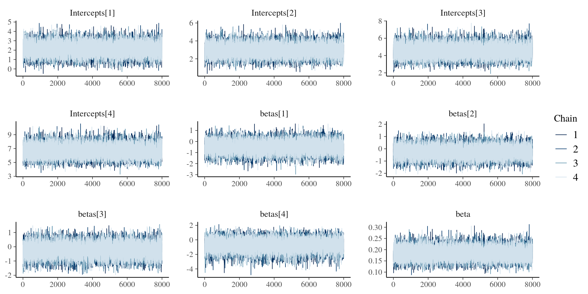
# También podemos realizar distintas comprobaciones mediante la siguiente herramienta en línea:
# shinystan::launch_shinystan(fit_modelo_ordinal)\({\;\;\;\;\;\;}\) Visualizamos LOO, WAIC, la distribución posterior de los parámetros y realizamos algunos posterior predictive checks:
ordinal_parameters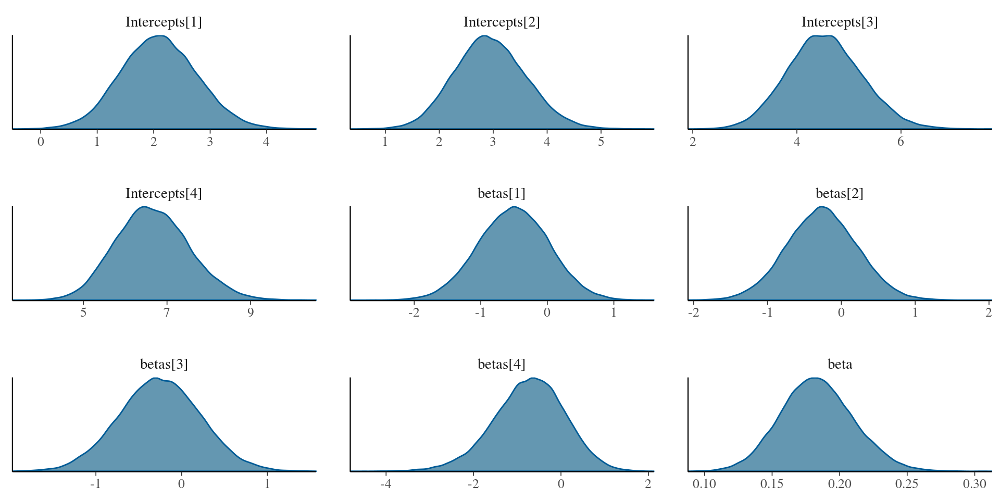
print(ordinal_loo, digits = 3)
##
## Computed from 32000 by 106 log-likelihood matrix
##
## Estimate SE
## elpd_loo -131.290 6.576
## p_loo 7.834 0.644
## looic 262.580 13.152
## ------
## Monte Carlo SE of elpd_loo is 0.020.
##
## All Pareto k estimates are good (k < 0.5).
## See help('pareto-k-diagnostic') for details.
print(ordinal_waic, digits = 3)
##
## Computed from 32000 by 106 log-likelihood matrix
##
## Estimate SE
## elpd_waic -131.259 6.572
## p_waic 7.803 0.637
## waic 262.517 13.143
## Warning: 1 (0.943%) p_waic estimates greater than 0.4. We recommend trying
## loo instead.
# Podemos visualizar la distribución posterior de los parámetros extrayéndolos del modelo:
# plot(density(post_modelo_ordinal$beta))
scores_by_category
##
## 1 2 3 4 5
## 27.85853 10.38147 26.83944 27.67394 13.24662
table(mydata$Indicador)
##
## 1 2 3 4 5
## 28 10 28 29 11
# Parece que el número de veces que se escoje cada categoría en el dataset y en nuestras simulaciones son bastante similares.
scores_by_category_intervencion
##
## 1 2 3 4 5
## 18.549781 4.659594 11.835406 9.751594 2.203625
table(mydata$Indicador[mydata$Grupo == 1])
##
## 1 2 3 4 5
## 19 4 12 11 1
scores_by_category_control
##
## 1 2 3 4 5
## 9.308750 5.721875 15.004031 17.922344 11.043000
table(mydata$Indicador[mydata$Grupo == 0])
##
## 1 2 3 4 5
## 9 6 16 18 10
# Si estas predicciones no son buenas, entonces nuestro modelo no es una adecuada representación del proceso que ha generado las observaciones y debemos expandirlo con más parámetroso ajustar otro modelo y compararlo mediante WAIC o LOO. Si WAIC o LOO son menores para un determinado modelo, las predicciones son mejores.\({\;\;\;\;\;\;}\) En la siguiente figura se pueden observar las distribuciones posteriores de los efectos.
Intercepto_1 <- post_modelo_ordinal$Intercepts[, 1]
Intercepto_2 <- post_modelo_ordinal$Intercepts[, 2]
Intercepto_3 <- post_modelo_ordinal$Intercepts[, 3]
Intercepto_4 <- post_modelo_ordinal$Intercepts[, 4]
beta_X1 <- post_modelo_ordinal$betas[, 1]
beta_X2 <- post_modelo_ordinal$betas[, 2]
beta_X3 <- post_modelo_ordinal$betas[, 3]
beta_X4 <- post_modelo_ordinal$betas[, 4]
beta_M <- post_modelo_ordinal$beta
M1 <- post_modelo_betabinomial$M1
M0 <- post_modelo_betabinomial$M0
Y1M0 <- Y1M1 <- Y0M0 <- Y0M1 <- array(NA, dim = c(106, 5, 32000))
set.seed(1)
for(i in 1:32000) {
Y1M0[1:106, 1:5, i] <- predictPO(Si = M0[i, ], Grupo = 1, Intercepto_1[i], Intercepto_2[i], Intercepto_3[i],
Intercepto_4[i], beta_X1[i], beta_X2[i], beta_X3[i], beta_X4[i], beta_M[i])
Y1M1[1:106, 1:5, i] <- predictPO(Si = M1[i, ], Grupo = 1, Intercepto_1[i], Intercepto_2[i], Intercepto_3[i],
Intercepto_4[i], beta_X1[i], beta_X2[i], beta_X3[i], beta_X4[i], beta_M[i])
Y0M0[1:106, 1:5, i] <- predictPO(Si = M0[i, ], Grupo = 0, Intercepto_1[i], Intercepto_2[i], Intercepto_3[i],
Intercepto_4[i], beta_X1[i], beta_X2[i], beta_X3[i], beta_X4[i], beta_M[i])
Y0M1[1:106, 1:5, i] <- predictPO(Si = M1[i, ], Grupo = 0, Intercepto_1[i], Intercepto_2[i], Intercepto_3[i],
Intercepto_4[i], beta_X1[i], beta_X2[i], beta_X3[i], beta_X4[i], beta_M[i])
}
NDE <- Y1M0 - Y0M0 # Efecto natural directo.
NIE <- Y0M1 - Y0M0 # Efecto natural indirecto.
NDE_estimate <- NIE_estimate <- NA
for(i in 1:5) NDE_estimate[i] <- mean(NDE[, i, ]) # Efecto natural directo promediado.
for(i in 1:5) NIE_estimate[i] <- mean(NIE[, i, ]) # Efecto natural indirecto promediado.
NDE_posterior_mean <- NIE_posterior_mean <- matrix(NA, nrow = 32000, ncol = 5)
for(x in 1:5) for(i in 1:32000) NDE_posterior_mean[i, x] <- mean(NDE[, x, i]) # Media del efecto natural directo promediado.
for(x in 1:5) for(i in 1:32000) NIE_posterior_mean[i, x] <- mean(NIE[, x, i]) # Media del efecto natural indirecto promediado.
posterior_NDE <- as.data.frame(NDE_posterior_mean)
names(posterior_NDE) <- paste("Categoría", seq(1:5), sep = " ")
posterior_NDE <- gather(posterior_NDE, Categoría, value, c("Categoría 1", "Categoría 2", "Categoría 3", "Categoría 4", "Categoría 5") )
plot10 <- ggplot(posterior_NDE, aes(value, fill = Categoría)) + theme_gray() +
geom_density(alpha = 0.4) +
scale_x_continuous(name = NULL, limits = c(-0.3, 0.4), round(seq(-0.3, 0.4, 0.1), 1)) +
scale_y_continuous(name = "Densidad", limits = c(0, 10), seq(0, 10, 1), expand = c(0.03, 0)) +
theme(axis.text.x = element_text(size = 12), axis.title.x = element_text(size = 15.5),
axis.text.y = element_text(size = 12), axis.title.y = element_text(size = 15.5)) +
theme(axis.text.x = element_text(margin = unit(c(3, 0, 0, 0), "mm"), colour = "black"),
axis.text.y = element_text(margin = unit(c(0, 3, 0, 0), "mm"), colour = "black")) +
theme(axis.title.x = element_text(margin = unit(c(5, 0, 0, 0), "mm"), colour = "black"),
axis.title.y = element_text(margin = unit(c(0, 5, 0, 0), "mm"), colour = "black")) +
theme(axis.ticks.x = element_line(size = 0.6),
axis.ticks.y = element_line(size = 0.6)) +
theme(legend.background = element_rect(fill = "transparent")) +
theme(panel.border = element_rect(fill = NA), axis.ticks.length = unit(0.2, "cm")) +
theme(legend.position = c(0.85, 0.5), legend.text=element_text(size = 12)) +
guides(fill = guide_legend(title = NULL)) +
annotate("text", x = -0.2, y = 8.25, label = "Efecto Natural \n Directo", parse = F, colour = "black", size = 5)
posterior_NIE <- as.data.frame(NIE_posterior_mean)
names(posterior_NIE) <- paste("Categoría", seq(1:5), sep = " ")
posterior_NIE <- gather(posterior_NIE, Categoría, value, c("Categoría 1", "Categoría 2", "Categoría 3", "Categoría 4", "Categoría 5") )
plot11 <- ggplot(posterior_NIE, aes(value, fill = Categoría)) + theme_gray() +
geom_density(alpha = 0.4) +
scale_x_continuous(name = NULL, limits = c(-0.3, 0.4), round(seq(-0.3, 0.4, 0.1), 1)) +
scale_y_continuous(name = "Densidad", limits = c(0, 25), seq(0, 25, 5), expand = c(0.03, 0)) +
theme(axis.text.x = element_text(size = 12), axis.title.x = element_text(size = 15.5),
axis.text.y = element_text(size = 12), axis.title.y = element_text(size = 15.5)) +
theme(axis.text.x = element_text(margin = unit(c(3, 0, 0, 0), "mm"), colour = "black"),
axis.text.y = element_text(margin = unit(c(0, 3, 0, 0), "mm"), colour = "black")) +
theme(axis.title.x = element_text(margin = unit(c(5, 0, 0, 0), "mm"), colour = "black"),
axis.title.y = element_text(margin = unit(c(0, 5, 0, 0), "mm"), colour = "black")) +
theme(axis.ticks.x = element_line(size = 0.6),
axis.ticks.y = element_line(size = 0.6)) +
theme(legend.background = element_rect(fill = "transparent")) +
theme(panel.border = element_rect(fill = NA), axis.ticks.length = unit(0.2, "cm")) +
theme(legend.position = c(0.85, 0.5), legend.text=element_text(size = 12)) +
guides(fill = guide_legend(title = NULL)) +
annotate("text", x = -0.2, y = 20, label = "Efecto Natural \n Indirecto", parse = F, colour = "black", size = 5)
posterior_TE <- as.data.frame(NIE_posterior_mean + NDE_posterior_mean)
names(posterior_TE) <- paste("Categoría", seq(1:5), sep = " ")
posterior_TE <- gather(posterior_TE, Categoría, value, c("Categoría 1", "Categoría 2", "Categoría 3", "Categoría 4", "Categoría 5") )
plot12 <- ggplot(posterior_TE, aes(value, fill = Categoría)) + theme_gray() +
geom_density(alpha = 0.4) +
scale_x_continuous(name = NULL, limits = c(-0.5, 0.5), round(seq(-0.5, 0.5, 0.1), 1)) +
scale_y_continuous(name = "Densidad", limits = c(0, 10.3), seq(0, 10, 1), expand = c(0.03, 0)) +
theme(axis.text.x = element_text(size = 12), axis.title.x = element_text(size = 15.5),
axis.text.y = element_text(size = 12), axis.title.y = element_text(size = 15.5)) +
theme(axis.text.x = element_text(margin = unit(c(3, 0, 0, 0), "mm"), colour = "black"),
axis.text.y = element_text(margin = unit(c(0, 3, 0, 0), "mm"), colour = "black")) +
theme(axis.title.x = element_text(margin = unit(c(5, 0, 0, 0), "mm"), colour = "black"),
axis.title.y = element_text(margin = unit(c(0, 5, 0, 0), "mm"), colour = "black")) +
theme(axis.ticks.x = element_line(size = 0.6),
axis.ticks.y = element_line(size = 0.6)) +
theme(legend.background = element_rect(fill = "transparent")) +
theme(panel.border = element_rect(fill = NA), axis.ticks.length = unit(0.2, "cm")) +
theme(legend.position = c(0.85, 0.7), legend.text=element_text(size = 12)) +
guides(fill = guide_legend(title = NULL)) +
annotate("text", x = -0.35, y = 8.5, label = "Efecto Total", parse = F, colour = "black", size = 5)
# Distribución posterior de los efectos para cada categoría:
grid.arrange(plot10, plot11, plot12, padding = unit(2, "line"),
bottom = textGrob("Incremento/decremento de probabilidad", gp = gpar(fontsize = 15.5), vjust = 0.8, hjust = 0.4))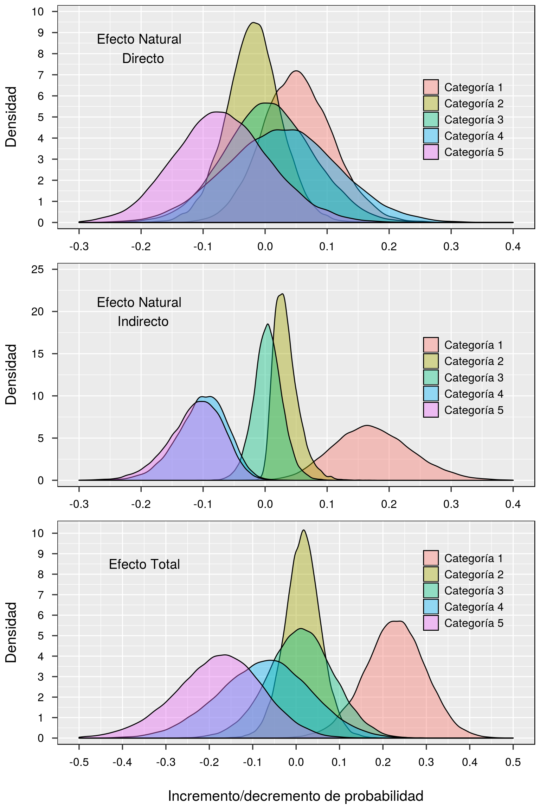
\({\;\;\;\;\;\;}\) Para estimar la probabilidad de que el efecto indirecto de la administración del fármaco sea mayor o menor que 0 tan solo debemos calcular la proporción de muestras que es superior a 0 para cualquier categoría:
# Con las muestras obtenidas podemos computar la probabilidad de que el efecto natural indirecto sea mayor a 0 para cada categoría:
prob_1 <- mean(posterior_NIE$value[posterior_NIE$Categoría == "Categoría 1"] > 0)
prob_2 <- mean(posterior_NIE$value[posterior_NIE$Categoría == "Categoría 2"] > 0)
prob_3 <- mean(posterior_NIE$value[posterior_NIE$Categoría == "Categoría 3"] > 0)
prob_4 <- mean(posterior_NIE$value[posterior_NIE$Categoría == "Categoría 4"] > 0)
prob_5 <- mean(posterior_NIE$value[posterior_NIE$Categoría == "Categoría 5"] > 0)
prob_NIE_above_0 <- data.frame(prob_1, prob_2, prob_3, prob_4, prob_5)
colnames(prob_NIE_above_0) <- paste("Categoría", seq(1:5), sep = " ")
rownames(prob_NIE_above_0) <- "Probabilidad"
kable(t(prob_NIE_above_0), digits = 5, align = "c") %>%
kable_styling(bootstrap_options = "striped", full_width = F)| Probabilidad | |
|---|---|
| Categoría 1 | 0.99881 |
| Categoría 2 | 0.99172 |
| Categoría 3 | 0.57953 |
| Categoría 4 | 0.00188 |
| Categoría 5 | 0.00144 |
\({\;\;\;\;\;\;}\) Según estos resultados, que coinciden con el de los análisis anteriores, parece razonable concluir que esta variable mediacional aumenta la probabilidad de puntuar en las categorías 1 y 2 en detrimento de las categorías 4 y 5.
\({\;\;\;\;\;\;}\) En este manuscrito se han tratado brevemente cuatro métodos populares con los que analizar datos experimentales en psicología. Sin embargo, existe una gran diferencia entre ellos que suele pasar desapercibida. Entre los análisis frecuentistas, mientras que los tests de equivalencia, superioridad e inferioridad son meramente instrumentos para guiar el comportamiento del investigador a largo plazo de manera que no consuma sus recursos sin obtener resultados que considera de relevancia, la aproximación descrita en Mayo and Cox (2006) entraña toda una filosofía de la ciencia aplicada a nivel estadístico. Esta filosofía declara que se puede obtener un nivel de evidencia para cada posible valor del parámetro tomando en consideración la capacidad del test, en términos de potencia estadística, para descubrir discrepancias entre las predicciones del modelo nulo y los datos.
\({\;\;\;\;\;\;}\) Por otra parte, la inferencia bayesiana reconceptualidad el término probabilidad para dotarle de una subjetividad que es introducida en forma de distribuciones probabilísticas a priori. Quienes advocan por considerar que una medida de evidencia es manifestada en forma de factor de Bayes, consideran que dicha subjetividad se corresponde con la creencia que el investigador otorga a cada hipótesis que quiere contrastar y el nivel de evidencia viene determinada por el impacto que los datos ejercen sobre dicha creencia. Una implicación inmediata de esta perspectiva requiere que dicha evidencia siempre sea de naturaleza comparativa pues se corresponde con la razón entre las predicciones que distintos modelo realizan sobre los datos. Por el contrario, otros bayesianos prefieren concebir la subjetividad como un conocimiento previo sobre la distribución del parámetro o una manifestación de su incertidumbre que regulariza los resultados. Para estos, las distribuciones posteriores aportan la evidencia misma, no es necesario establecer creencias sobre hipótesis y compararlas. Además, dado que el objetivo es regularizar los resultados sancionando valores improbables o imposibles del parámetro, una recomendación frecuente es analizar los datos varias veces modificando las distribuciones a priori y observar cómo afectan a las posteriores (sensitivity analysis).
\({\;\;\;\;\;\;}\) El autor de este manuscrito ha validado los modelos empleados simulando datos y recuperando los parámetros a partir de ellos. En este proceso no ha sido necesario establecer probabilidades a priori sino tener la certeza de que, fueran los modelos incorrectos, estos no habrían recuperado con alta probabilidad los verdaderos valores del parámetro. Asumiendo que incluso los bayesianos validan sus modelos de esta forma, es posible que el enfoque desarrollado por Deborah Mayo para conceptualizar el término evidencia sea el más adecuado. De hecho, algunos importantes autores bayesianos han intentado incluir una parte de la filosofía de Mayo en la suya (Andrew and Rohilla, n.d.) a través de la comprobación de predicciones posteriores (posterior predictive checks). Resumidamente, este procedimiento consiste en generar nuevos datos a partir del modelo bayesiano y comprobar si estas predicciones son similares a los datos observados. Si esto no es así, se considera que el modelo es falsado. Sin embargo, no está claro en qué medida esta técnica de falsación permite garantizar inferencias con un determinado rigor. Adicionalmente, aún persisten diferencias que incluso involucran el mismo diseño experimental: la estadística frecuentista requiere que los diseños experimentales sean completados de acuerdo a un plan previo sin considerar cómo se va desarrollando la investigación mientras que los bayesianos permiten detener la recogida de datos una vez se ha obtenido, a juicio del analista, una cantidad de evidencia suficiente (Rouder 2014).
\({\;\;\;\;\;\;}\) Sea de una u otra forma, los investigadores en psicología deben tener presente las diferencias que entrañan los diversos métodos que comúnmente son empleados en la literatura pues suelen diferir en su conceptualización del término evidencia, el tipo de asunciones que establecen para validar los modelos e incluso afectan al propio diseño experimental.
\({\;\;\;\;\;\;}\) A continuación se citan los principales paquetes R empleados: Auguie (2017), Barrett (2018), Gabry and Mahr (2017), Gronau and Singmann (2017), Meschiari (2015), Pedersen (2017), R Core Team (2018), Stan Development Team (2017), Stan Development Team (2018), Textor and van der Zander (2016), Vehtari et al. (2018), Wickham (2016), Wickham (2017), Yee (2018).
sessionInfo()
## R version 3.4.4 (2018-03-15)
## Platform: x86_64-pc-linux-gnu (64-bit)
## Running under: Linux Mint 18.3
##
## Matrix products: default
## BLAS: /usr/lib/openblas-base/libblas.so.3
## LAPACK: /usr/lib/libopenblasp-r0.2.18.so
##
## locale:
## [1] LC_CTYPE=es_ES.UTF-8 LC_NUMERIC=C
## [3] LC_TIME=es_ES.UTF-8 LC_COLLATE=es_ES.UTF-8
## [5] LC_MONETARY=es_ES.UTF-8 LC_MESSAGES=es_ES.UTF-8
## [7] LC_PAPER=es_ES.UTF-8 LC_NAME=C
## [9] LC_ADDRESS=C LC_TELEPHONE=C
## [11] LC_MEASUREMENT=es_ES.UTF-8 LC_IDENTIFICATION=C
##
## attached base packages:
## [1] grid splines stats4 stats graphics grDevices utils
## [8] datasets methods base
##
## other attached packages:
## [1] bindrcpp_0.2.2 BayesFactor_0.9.12-2 Matrix_1.2-14
## [4] coda_0.19-1 kableExtra_0.9.0 knitr_1.20
## [7] patchwork_0.0.1 ggdag_0.1.1.9000 dagitty_0.2-2
## [10] latex2exp_0.4.0 gridExtra_2.3 bayesplot_1.5.0.9000
## [13] VGAM_1.0-5 shinystan_2.5.0 shiny_1.0.5
## [16] loo_2.0.0 bridgesampling_0.4-0 rstan_2.17.3
## [19] StanHeaders_2.17.2 forcats_0.3.0 stringr_1.3.0
## [22] dplyr_0.7.5 purrr_0.2.4 readr_1.1.1
## [25] tidyr_0.8.0 tibble_1.4.2 ggplot2_2.2.1.9000
## [28] tidyverse_1.2.1
##
## loaded via a namespace (and not attached):
## [1] colorspace_1.3-2 deldir_0.1-14 ggridges_0.5.0
## [4] rsconnect_0.8.8 rprojroot_1.3-2 markdown_0.8
## [7] base64enc_0.1-3 rstudioapi_0.7 MatrixModels_0.4-1
## [10] ggrepel_0.7.0 DT_0.3 mvtnorm_1.0-7
## [13] lubridate_1.7.3 xml2_1.2.0 mnormt_1.5-5
## [16] shinythemes_1.1.1 polyclip_1.6-1 jsonlite_1.5
## [19] broom_0.4.3 ggforce_0.1.1 compiler_3.4.4
## [22] httr_1.3.1 backports_1.1.2 assertthat_0.2.0
## [25] lazyeval_0.2.1 cli_1.0.0 later_0.7.2
## [28] tweenr_0.1.5 htmltools_0.3.6 tools_3.4.4
## [31] igraph_1.2.1 gtable_0.2.0 glue_1.2.0
## [34] reshape2_1.4.3 V8_1.5 Rcpp_0.12.17
## [37] cellranger_1.1.0 nlme_3.1-137 udunits2_0.13
## [40] crosstalk_1.0.0 ggraph_1.0.0.9999 psych_1.7.8
## [43] rvest_0.3.2 mime_0.5 miniUI_0.1.1
## [46] gtools_3.5.0 MASS_7.3-50 zoo_1.8-1
## [49] scales_0.5.0.9000 tidygraph_1.0.0.9999 colourpicker_1.0
## [52] hms_0.4.1 promises_1.0.1 Brobdingnag_1.2-4
## [55] parallel_3.4.4 inline_0.3.14 curl_3.2
## [58] yaml_2.1.19 pbapply_1.3-4 stringi_1.1.6
## [61] highr_0.6 dygraphs_1.1.1.4 boot_1.3-20
## [64] rlang_0.2.0.9001 pkgconfig_2.0.1 matrixStats_0.53.1
## [67] evaluate_0.10.1 lattice_0.20-35 bindr_0.1.1
## [70] labeling_0.3 htmlwidgets_1.0 tidyselect_0.2.4
## [73] plyr_1.8.4 magrittr_1.5 R6_2.2.2
## [76] mgcv_1.8-23 pillar_1.1.0 haven_1.1.1
## [79] foreign_0.8-70 withr_2.1.2 units_0.5-1
## [82] xts_0.10-1 modelr_0.1.2 crayon_1.3.4
## [85] rmarkdown_1.9 viridis_0.5.1 readxl_1.0.0
## [88] threejs_0.3.1 digest_0.6.15 xtable_1.8-2
## [91] httpuv_1.4.2 munsell_0.4.3 viridisLite_0.3.0
## [94] concaveman_1.0.0 shinyjs_1.0Andrew, Gelman, and Shalizi Cosma Rohilla. n.d. “Philosophy and the Practice of Bayesian Statistics.” British Journal of Mathematical and Statistical Psychology 66 (1): 8–38. doi:10.1111/j.2044-8317.2011.02037.x.
Auguie, Baptiste. 2017. GridExtra: Miscellaneous Functions for “Grid” Graphics. https://CRAN.R-project.org/package=gridExtra.
Banks, George C., Steven G. Rogelberg, Haley M. Woznyj, Ronald S. Landis, and Deborah E. Rupp. 2016. “Editorial: Evidence on Questionable Research Practices: The Good, the Bad, and the Ugly.” Journal of Business and Psychology 31 (3): 323–38. doi:10.1007/s10869-016-9456-7.
Barberia, Elisabet AND Matute, Itxaso AND Tubau. 2018. “A Short Educational Intervention Diminishes Causal Illusions and Specific Paranormal Beliefs in Undergraduates.” PLOS ONE 13 (1). Public Library of Science: 1–14. doi:10.1371/journal.pone.0191907.
Barrett, Malcolm. 2018. Ggdag: Analyze and Create Elegant Directed Acyclic Graphs. https://github.com/malcolmbarrett/ggdag.
Gabry, Jonah, and Tristan Mahr. 2017. Bayesplot: Plotting for Bayesian Models. https://CRAN.R-project.org/package=bayesplot.
Greenland, Sander, Stephen J. Senn, Kenneth J. Rothman, John B. Carlin, Charles Poole, Steven N. Goodman, and Douglas G. Altman. 2016. “Statistical Tests, P Values, Confidence Intervals, and Power: A Guide to Misinterpretations.” European Journal of Epidemiology 31 (4): 337–50. doi:10.1007/s10654-016-0149-3.
Gronau, Quentin F., and Henrik Singmann. 2017. Bridgesampling: Bridge Sampling for Marginal Likelihoods and Bayes Factors. https://CRAN.R-project.org/package=bridgesampling.
Imai, Kosuke, Luke Keele, and Dustin Tingley. 2010. “A General Approach to Causal Mediation Analysis.” Psychological Methods. Imai, Kosuke: Department of Politics, Princeton University, Princeton, NJ, US, 08544, kimai@princeton.edu: American Psychological Association. doi:10.1037/a0020761.
Lakens, Daniël. 2017. “Equivalence Tests: A Practical Primer for T Tests, Correlations, and Meta-Analyses.” Social Psychological and Personality Science 8 (4): 355–62. doi:10.1177/1948550617697177.
Lindsay, D. Stephen. 2015. “Replication in Psychological Science.” Psychol Sci 26 (12). SAGE Publications Inc: 1827–32. doi:10.1177/0956797615616374.
Mayo, Deborah G., and D. R. Cox. 2006. “Frequentist Statistics as a Theory of Inductive Inference.” In Optimality, edited by Javier Rojo, Number 49:77–97. Lecture Notes–Monograph Series. Beachwood, Ohio, USA: Institute of Mathematical Statistics. doi:10.1214/074921706000000400.
Mayo, Deborah G., and Aris Spanos. 2006. “Severe Testing as a Basic Concept in a Neyman–Pearson Philosophy of Induction.” The British Journal for the Philosophy of Science 57 (2): 323–57. doi:10.1093/bjps/axl003.
———. 2011. “Error Statistics.” In Philosophy of Statistics, edited by Prasanta S. Bandyopadhyay and Malcolm R. Forster, 7:153–98. Handbook of the Philosophy of Science. Amsterdam: North-Holland. doi:https://doi.org/10.1016/B978-0-444-51862-0.50005-8.
Meschiari, Stefano. 2015. Latex2exp: Use Latex Expressions in Plots. https://CRAN.R-project.org/package=latex2exp.
Morey, Richard D., Jan-Willem Romeijn, and Jeffrey N. Rouder. 2016. “The Philosophy of Bayes Factors and the Quantification of Statistical Evidence.” Journal of Mathematical Psychology 72: 6–18. doi:https://doi.org/10.1016/j.jmp.2015.11.001.
Morris, Stefanie Dorough, James W. Grice, and Ryan A. Cox. 2017. “Scale Imposition as Quantitative Alchemy: Studies on the Transitivity of Neuroticism Ratings.” Basic and Applied Social Psychology 39 (1). Routledge: 1–18. doi:10.1080/01973533.2016.1256288.
Munafò, Marcus R., Brian A. Nosek, Dorothy V. M. Bishop, Katherine S. Button, Christopher D. Chambers, Nathalie Percie du Sert, Uri Simonsohn, Eric-Jan Wagenmakers, Jennifer J. Ware, and John P. A. Ioannidis. 2017. “A Manifesto for Reproducible Science.” Nature Human Behaviour 1 (January). Macmillan Publishers Limited: 0021. http://dx.doi.org/10.1038/s41562-016-0021.
Neyman, J., and E. S. Pearson. 1933. “IX. on the Problem of the Most Efficient Tests of Statistical Hypotheses.” Philosophical Transactions of the Royal Society of London A: Mathematical, Physical and Engineering Sciences 231 (694-706). The Royal Society: 289–337. doi:10.1098/rsta.1933.0009.
Nuijten, Michèle B., Ruud Wetzels, Dora Matzke, Conor V. Dolan, and Eric-Jan Wagenmakers. 2015. “A Default Bayesian Hypothesis Test for Mediation.” Behavior Research Methods 47 (1): 85–97. doi:10.3758/s13428-014-0470-2.
Open Science Collaboration. 2015. “Estimating the Reproducibility of Psychological Science.” Science 349 (6251). American Association for the Advancement of Science. doi:10.1126/science.aac4716.
Pearl, Judea. 2014. “Interpretation and Identification of Causal Mediation.” Psychological Methods. Pearl, Judea: Computer Science Department, University of California Los Angeles, Los Angeles, CA, US, 90095-1596, judea@cs.ucla.edu: American Psychological Association. doi:10.1037/a0036434.
Pedersen, Thomas Lin. 2017. Patchwork: The Composer of Ggplots. https://github.com/thomasp85/patchwork.
Peterson, Bercedis, and Frank E. Harrell. 1990. “Partial Proportional Odds Models for Ordinal Response Variables” 39 (2). [Wiley, Royal Statistical Society]: 205–17. http://www.jstor.org/stable/2347760.
R Core Team. 2018. R: A Language and Environment for Statistical Computing. Vienna, Austria: R Foundation for Statistical Computing. https://www.R-project.org/.
Rouder, Jeffrey N. 2014. “Optional Stopping: No Problem for Bayesians.” Psychonomic Bulletin & Review 21 (2): 301–8. doi:10.3758/s13423-014-0595-4.
Senn, Stephen. 2002. “A Comment on Replication, P-Values and Evidence S.N.Goodman, Statistics in Medicine 1992; 11:875-879.” Statistics in Medicine 21 (16). John Wiley & Sons, Ltd.: 2437–44. doi:10.1002/sim.1072.
Stan Development Team. 2017. “Shinystan: Interactive Visual and Numerical Diagnostics and Posterior Analysis for Bayesian Models.” http://mc-stan.org/.
———. 2018. “RStan: The R Interface to Stan.” http://mc-stan.org/.
Sterling, Theodore D. 1959. “Publication Decisions and Their Possible Effects on Inferences Drawn from Tests of Significance–Or Vice Versa.” Journal of the American Statistical Association 54 (285). [American Statistical Association, Taylor & Francis, Ltd.]: 30–34. http://www.jstor.org/stable/2282137.
Textor, Johannes, and Benito van der Zander. 2016. Dagitty: Graphical Analysis of Structural Causal Models. https://CRAN.R-project.org/package=dagitty.
Trafimow, David, and Michael Marks. 2015. “Editorial.” Basic and Applied Social Psychology 37 (1). Routledge: 1–2. doi:10.1080/01973533.2015.1012991.
VanderWeele, Tyler J., Yun Zhang, and Pilar Lim. 2016. “Brief Report: Mediation Analysis with an Ordinal Outcome.” Epidemiology 27 (5): –. https://journals.lww.com/epidem/Fulltext/2016/09000/Brief_Report___Mediation_Analysis_with_an_Ordinal.8.aspx.
Vehtari, Aki, Jonah Gabry, Yuling Yao, and Andrew Gelman. 2018. “Loo: Efficient Leave-One-Out Cross-Validation and Waic for Bayesian Models.” https://CRAN.R-project.org/package=loo.
Wason, P. C. 1960. “On the Failure to Eliminate Hypotheses in a Conceptual Task.” Quarterly Journal of Experimental Psychology 12 (3). SAGE Publications: 129–40. doi:10.1080/17470216008416717.
Wetzels, Ruud, Jeroen G. W. Raaijmakers, Emöke Jakab, and Eric-Jan Wagenmakers. 2009. “How to Quantify Support for and Against the Null Hypothesis: A Flexible Winbugs Implementation of a Default Bayesian T Test.” Psychonomic Bulletin & Review 16 (4): 752–60. doi:10.3758/PBR.16.4.752.
Wickham, Hadley. 2016. Ggplot2: Elegant Graphics for Data Analysis. Springer-Verlag New York. http://ggplot2.org.
———. 2017. Tidyverse: Easily Install and Load the ’Tidyverse’. https://CRAN.R-project.org/package=tidyverse.
Yates, F. 1951. “The Influence of Statistical Methods for Research Workers on the Development of the Science of Statistics.” Journal of the American Statistical Association 46 (253). Taylor & Francis: 19–34. doi:10.1080/01621459.1951.10500764.
Yee, Thomas W. 2018. VGAM: Vector Generalized Linear and Additive Models. https://CRAN.R-project.org/package=VGAM.
En el Open Science Collaboration (2015) se volvieron a contrastar experimentalmente 97 hipótesis reportadas con resultados estadísticamente significativos (4 de las cuales tenían p-valores ligeramente por encima de 0.05), considerando como replicación la repetición de un p-valor menor a 0.05. Sin embargo, tras esta regla subyace una dicotomización arbitraria de la evidencia.↩
La razón de usar un parámetro grupal distinto para cada categoría se debe a que la asunción de que dichos coeficientes son equivalentes no está suficientemente garantizada.↩
Esta disposición a invertir los recursos puede depender de factores tan diferentes como el poder adquisitivo o la importancia subjetiva que el investigador asigna al tamaño del efecto. Se sugiere que, cuando el investigador carezca de razones teóricas para establecer el menor efecto de interés, se tome el efecto más pequeño que cuente con una razonable potencia estadística. Sin embargo, esta práctica es discutible ya que ante estimaciones con mucha incertidumbre (pequeño tamaño muestral) corremos el riesgo de incluir en la región de equivalencia valores que consideramos de práctica importancia.↩
Los límites no tienen por qué ser equivalentes en magnitud.↩
Una razón de momios de 0.83 corresponde a una disminución del 20% en los momios del grupo de intervención respecto al grupo de no intervención.↩
Aunque se suele pensar que ambas son irreconciliables.↩
Para una lectura sobre los frecuentes malentendidos que surgen al interpretar los intervalos de confianza se recomienda Greenland et al. (2016).↩
Para \(\beta^\prime_{MY}\) debe computarse el complementario ya que la dirección del efecto es opuesta.↩
Nótese que los valores de rigor al 97.5% coinciden con los límites de confianza del intervalo de los respectivos parámetros al 95%. Sin embargo, esta nueva interpretación y visualización nos aporta información sobre el grado de evidencia (rigor) con el que se puede inferir cualquier posible valor que pueden tomar los parámetros.↩
Se utiliza la distribución posterior de los parámetros, \(p(\theta \, | \, y)\), para computar el marginal likelihood, \(p(y) = \int p(y \, | \, \theta) \, p(\theta) \, d{\theta}\), a través de un algoritmo iterativo conocido como bridge sampling: \[ \hat{p}(y) = \frac{\int p(y \, | \, \theta) \, p(\theta) \, h(\theta) \, g(\theta) \, d\theta}{\int h(\theta) \, g(\theta) \, p(\theta \, | \, y) \, d\theta} = \frac{E_{g(\theta)}[p(y \, | \, \theta) \, h(\theta)]}{E_{p(\theta \, | \, y)}[h(\theta) \, g(\theta)]} \] donde \(\theta\) es un vector de parámetros, \(h(\theta)\) es la función que minimiza el error de predicción en el proceso iterativo y \(g(\theta)\) es una distribución arbitraria pero que debe ser algo similar a la posterior. De esta manera, tomando muestras de \(g(\theta)\) y de \(p(\theta \, | \, y)\), podemos aproximar el marginal likelihood. Una explicación más concisa puede encontrarse en Gronau and Singmann (2017).
\({\;\;\;\;\;\;}\) La importancia de esta técnica es vital porque hasta hace poco solo era posible calcular los factores de Bayes usando paquetes estadísticos con distribuciones a priori que ya venían dadas, es decir, hipótesis por defecto. Sin embargo, el reciente paquete R bridgesampling permite obtener el marginal likelihood de cualquier modelo que un analista pueda imaginar.↩